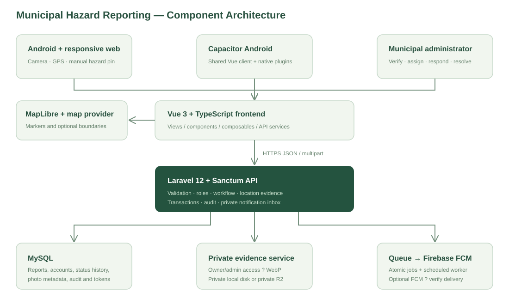
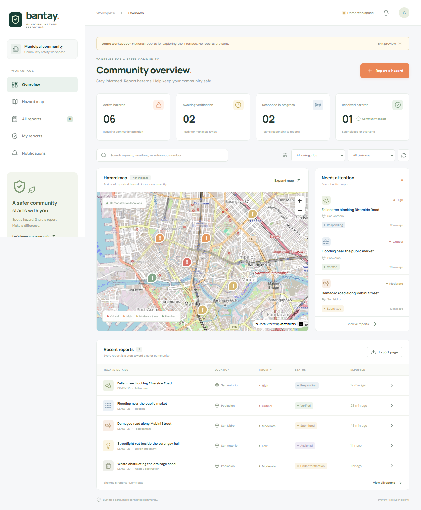
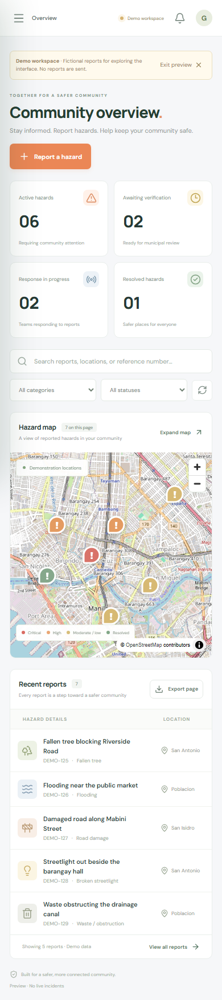

CAPSTONE TECHNICAL DOCUMENTATION
Municipal Emergency and Public Hazard Reporting System with Photo and Location-Based Incident Tracking
Application name: MuniAlert
Baseline date: 2 October 2026
Institution: ____________________
Proponents: ____________________
Adviser: ____________________
Municipality: Basista, Pangasinan
Prepared as an implementation appendix. Complete institutional details and actual evaluation findings under the school’s required format. External cloud/device/deployment validation is identified separately; fictional demo data is not municipal research evidence.
01 — Project overview and requirements
Project identity
Formal title: Municipal Emergency and Public Hazard Reporting System with Photo and Location-Based Incident Tracking.
Application name: MuniAlert (short for the municipal emergency and public hazard reporting system).
Managing office: Basista Municipal Hall, Pangasinan; the 13 barangays confirmed by the user.
Proponents, institution, adviser, and academic year: to be supplied by the project team.
Problem statement
The supplied Filipino interview reports an existing phone-based response process that the respondent says has no major reporting problem. Incidents are recorded manually, and the proposed system can improve organized records, completeness, timeliness and weekly/monthly consolidation. Road accidents are a frequent report; rescue, police and RHU coordinate according to need. Victim privacy and simple instructions are explicit requirements. This is qualitative evidence from the supplied document, not a measured response-time failure, respondent-count claim or proof of municipal acceptance. See the interview and screenshot review.
General objective
Develop and evaluate a mobile-friendly system through which citizens submit photographed, geographically identified hazards and municipal administrators verify, assign, respond to, and close those reports.
Specific objectives
- Provide a citizen workflow for a hazard category, description, photo evidence, barangay, and landmark.
- Support device GPS and manually placed or adjusted pins, requiring explicit location confirmation.
- Preserve GPS coordinates/accuracy and the selected pin independently, and display their distance for administrator review.
- Provide a map-centered dashboard, filtering, status history, department routing, and responder assignment.
- Reduce duplicate dispatches by suggesting recent, same-category reports within 100 meters and recording citizen confirmations.
- Reduce storage and bandwidth through photo compression and configurable object storage.
- Notify reporters of status changes through an in-app inbox and configured push integrations.
- Verify the implementation using automated tests and subsequently evaluate it with actual municipal users.
Stakeholders and roles
| Actor | Responsibilities |
|---|---|
| Guest | Browse accepted hazards/published news and accepted-only community statistics; sign in to report |
| Citizen | Submit reports, confirm another active hazard, track own private history, read notifications |
| Municipal administrator | Verify evidence/location, set priority, select department/team, post response notes, resolve and close reports |
| Student maintainer | Maintain code, tests, documentation, deployment configuration, backups and supported dependencies |
| Municipal operator/adviser | Approve operational workflow, public information policy, acceptance criteria and study procedures |
Responder assignment is a team/name field in this version. A separately authenticated responder app and dispatch roster are not implemented.
Functional requirements
| ID | Requirement | Acceptance criterion |
|---|---|---|
| FR-01 | Separate web and API applications | Vue frontend and Laravel backend build/run independently |
| FR-02 | Authentication and role enforcement | Public registration creates only citizens; admin operations reject citizens; remembered sessions survive browser/app restarts and logout revokes access |
| FR-03 | Photo reporting | At least one and at most three valid photos; final images at most 1 MB and 1920 pixels per side |
| FR-04 | GPS capture | GPS latitude, longitude and accuracy stored as a complete group |
| FR-05 | Manual/adjusted location | A manually selected pin is valid without GPS; adjusted GPS remains separate |
| FR-06 | Location confirmation | Submitting without explicit confirmation fails; editing a pin resets confirmation |
| FR-07 | Location verification | Admin sees source, distance and accuracy, and stores independent verified coordinates |
| FR-08 | Map and discovery | Only fact-checked, accepted hazards appear in community map/list/search; owners and admins retain private submission access |
| FR-09 | Duplicate detection | Suggest only accepted active same-category hazards within 100 m and six hours |
| FR-10 | Confirmations | One confirmation per citizen/report; reporters cannot confirm their own report |
| FR-11 | Workflow and routing | Valid transitions only; assigned status requires a response team; defaults route by category |
| FR-12 | Traceability | Status notes, actor references, timestamps and audit entries are retained |
| FR-13 | Notifications | Status updates create a private inbox entry; configured FCM job delivers push |
| FR-14 | Android integration | Capacitor project contains camera, geolocation and push integrations |
| FR-15 | Documentation and release verification | Phase tracker and capstone attachments maintained; all required checks pass before any GitHub push |
| FR-16 | Private evidence and reviewed publication | Raw descriptions, exact locations, observations and photos are owner/admin only; public news requires a separate admin-reviewed title/summary |
| FR-17 | Incident observations | Optional incident time and affected-person estimate; explicit yes/no/unknown injury observation; no victim identity fields |
| FR-18 | Resolution evidence | Administrators may add up to three private resolution photos, separately typed from the three incident photos |
| FR-19 | Period consolidation | Admin can filter up to 366 days and export weekly/monthly report counts with PHT dates and unknown-time fallback disclosed |
| FR-20 | Consistent application identity | MuniAlert is displayed in the web interface and Android label; the full user-approved capstone title appears in the guide and current documents |
| FR-21 | Feature guidance and user manual | Guests, citizens and admins can browse role-specific instructions, search topics and run a six-step highlighted tour |
| FR-22 | Promotional deliverables | Remotion source and editable preview plus user-requested MP4 exports use clearly labeled synthetic demonstrations |
| FR-23 | Clear, configurable map | Clear/Streets/Dark styles, independently switchable boundary levels, fit/area controls and synchronized hazard-category filtering remain usable on phones |
| FR-24 | Basista service area | Basista Municipal Hall covers exactly the 13 user-selected barangays; report entry uses an allowlist and map assets carry source provenance |
Nonfunctional requirements
| ID | Requirement | Verification approach |
|---|---|---|
| NFR-01 | Responsive access | Browser checks from 320px to 1920px, including tablet and landscape, with responsive report cards and no page-wide horizontal overflow |
| NFR-02 | Privacy and authorization | Public responses omit raw descriptions, precise coordinates, injury observations, original photos, private account/contact fields and GPS; an explicit reviewed news post may credit the submitter display name; direct unauthorized media requests fail |
| NFR-03 | Data integrity | Foreign keys, unique confirmations, transactional history/notifications/audits, guarded status transitions |
| NFR-04 | Maintainability | Separate services/composables/configuration, migrations, reproducible lockfiles and documented commands |
| NFR-05 | Honest failure feedback | Unavailable server, denied GPS, image failure and unconfigured push show understandable messages |
| NFR-06 | Low operating dependency | Local development storage works; R2, map provider and Firebase are configurable |
| NFR-07 | Deployment safety | HTTPS, private environment files, least-privilege DB credentials and worker/scheduler supervision |
Performance targets, availability SLA, recovery time, retention period and usability thresholds must be approved before evaluation. No numerical performance achievement is claimed without a measured test.
Scope and limitations
Implemented: citizen/admin workflows, photo compression, GPS/manual pins, evidence comparison, map/list dashboard, basic routing, status history, confirmations, in-app notifications, integration code, and technical documentation.
Not yet externally validated: real R2 access, FCM delivery, signed APK/AAB, actual barangay boundaries, Hostinger deployment, device field performance, backup restoration on the target host, and municipal UAT.
Outside this version: offline submission/synchronization, native iOS packaging, continuous location tracking, emergency dispatch guarantees, AI hazard classification, real-time responder tracking, verified identity enrollment, heatmaps, advanced analytics, and an administrative account-management UI. A report is not an emergency call.
Social authentication extension ? 4 November 2026
FR-02 now includes Google and Facebook signup/sign-in through Laravel Socialite for responsive web and Android. Password accounts can explicitly connect a provider after confirming their password. New social accounts are citizens; matching email never silently links identities. Provider configuration, real consent/callback tests, physical Android and target-host acceptance remain external requirements. See provider setup.
FR-25 — Readable controls, feedback and motion
The interface provides shared success/error/information toast feedback for user operations, animated dashboard/summary counts and account-scoped reading settings in Settings, with device-local guest preferences available without sign-in. Text sizes span 100%–200%, with bold text, high contrast, wider reading spacing, reduced motion and persistent messages. Validation uses one accessible toast with focus and field descriptions. Device reduced-motion preferences override animation, and browser zoom remains enabled. Verify small-screen reflow and keyboard behavior locally; physical Android/TalkBack and broad-age usability require separate acceptance. See the dated implementation review.
FR-26 — Privileged identity and continued security phases
Administrators must complete operator-approved authenticator enrollment and MFA before receiving an administrator session/token, including social and Android paths. Sensitive administration requires recent device/session verification. Versioned credentials enforce suspension and authority changes. Generic, verified-local-email recovery, one-use proofs/codes, encrypted secrets, private queued mail, enforced production CSP, optional fail-closed scanner/quarantine integration, redacted security events and maintained source checks extend the baseline. Real services, deployment policy and operational acceptance remain separate. See the Phase 2/3 record.
FR-27 — Durable device access and dashboard appearance
Closing/reopening the browser or Android app retains login on the same device. Explicit logout revokes that device; password/security changes still revoke affected credentials. MFA remains required for initial administrator login, and restored access does not grant recent verification. Administrators can preview, publish and remove an approved bounded dashboard background, with readable cards and a high-contrast override. Reading preferences in Settings and initial/navigation entry motion respect reading/motion preferences. Phase 3 adds aggregate monitoring and a guarded synthetic MySQL backup rehearsal. See the continuation.
FR-28 — Private submissions, factual review, news posts and hazard achievements
Other members cannot discover unaccepted reports through list/map/stat/search/nearby endpoints; owners retain My reports and admins the private queue. Admin acceptance records factual method, attestation, private note, actor/time and verified location. A separate privacy-reviewed publication action is required for news/share pages. Members can share reviewed posts through native/copy/Facebook/X/WhatsApp controls. Each private profile tracks three creative milestones for each of ten hazard categories using only that account's currently accepted reports. See the implementation.
FR-29 — Actionable notifications and emergency-first reporting
Notifications use the bell/mobile Updates dialog with owned single-item read and authorized report navigation, replacing the sidebar page. Reporting asks about immediate assistance, provides searchable approved hotlines with optional coordinate-based nearest sorting and retains online submission without a call. Committed submissions alert active administrators with configurable per-category sounds while the app is active. Private assistance flags, manual agency contacts/minimal responder briefs and a floating highlighted tour improve navigation without automating emergency dispatch. Approved contacts, actual delivery/audio/device/workload acceptance remain separate.
FR-30 — Private local image screening and administrator confirmation
Photos remain on BANTAY; an optional loopback-only local classifier produces advisory estimates through bounded ID-only jobs. Unavailable/unconfigured checks never claim authenticity. New incident images need explicit recorded human review and independent corroboration before factual acceptance; stale results cannot overwrite manual decisions. Public/reporting-user responses exclude internal assessment metadata. A maintained configured classifier, measured accuracy and hosting capability remain pending. See implementation/readiness.
FR-31 — Administrative statistical charts and office exports
Administrators compare counts by hazard type on Dashboard and Incident summary using daily, weekly, monthly or yearly charts, exact tables, date/category filters and an explicit submission/incident date basis in Philippine time. Downloadable PDF, Word DOCX and Excel XLSX reports include the selected aggregate chart and counts without private report details. The shared header account menu contains Profile, Settings and Log out, with guest Sign in in the header and reading settings available to guests. Notification previews remain bounded to the notification header height. See details.
02 — System architecture and source structure
Accepted technology baseline
The 12 November shared-interface and workflow update centralizes modal/form/table controls, adds administrator-managed departments/category routing, provides visible CSV seed catalogs with one configured seed entry point, and adds one-time saved-code password recovery. Community coordinate editing is replaced by confirmed map-pin actions. Server JSON remains authoritative for validation; floating feedback does not consume modal layout space. Social sharing exports only reviewed public fields, with copied Facebook captions and a deployed public link needed for crawler previews.
On 12 November 2026, the user confirmed that Ajhon10/MuniAlert should remain a public source repository and authorized pushing the current changes. This supersedes the earlier private-source preference described below. Public source access does not publish environment files, incident records, private evidence or credentials and does not deploy the application.
The user selected one private Ajhon10/MuniAlert GitHub workspace repository on 9 November 2026 for team testing. The Vue client and Laravel server remain separate applications in hazard-client/ and hazard-server/; shared tests, capstone documentation and deployment examples live at the root. Earlier local Git histories are preserved in ignored backups. This repository consolidation does not change the accepted stack or hosting architecture. Web releases package Vue inside Laravel’s public directory for one-origin Hostinger deployment. The confirmed deployment target is Hostinger Web/Cloud hosting, with Android plus responsive web as clients. See the selected hosting guide, stack review and team setup.
Vue 3 + TypeScript + Vite provides the client application. Capacitor packages the same client for Android. Laravel 12 exposes the REST API, Sanctum authenticates requests, and MySQL persists application data. MapLibre renders the map; a configurable tile/style provider supplies cartography. Laravel Filesystem stores evidence on a private local evidence disk or an operator-verified private Cloudflare R2 bucket. Authenticated media requests authorize each report/photo; original files are never published by the UI. Database notifications work independently of Firebase; a queued job can send FCM HTTP v1 messages when configured.
The client now presents role-specific navigation: citizens see reporting, verified news, notifications and their profile; administrators see report review, content management and their profile. The API independently checks roles for every privileged mutation. A public settings endpoint supplies approved hotlines and the initial map center. Public discovery requires factual acceptance; news additionally requires explicit publication of a reviewed public title/summary; citizen comments and reactions are stored separately. Achievement badges are calculated from verified report counts and their definitions are managed by administrators. The Philippine clock is formatted in the browser with the Asia/Manila time zone and updates every second.

flowchart TB
Citizen[Citizen phone browser] --> Vue[Vue 3 / TypeScript workspace]
Android[Capacitor Android: camera, GPS, push] --> Vue
Admin[Municipal administrator] --> Vue
Vue -->|HTTPS JSON / multipart| API[Laravel API + Sanctum]
Vue --> Map[MapLibre + configured map tiles]
API --> Request[Validation / authorization]
Request --> Rules[Workflow and location rules]
Rules --> DB[(MySQL)]
API --> Photos[PhotoStorage: decode / WebP / size limits]
Photos --> R2[Local storage or Cloudflare R2]
DB --> Inbox[Private notification inbox]
Rules --> Queue[Database queue]
Queue --> FCM[Firebase Cloud Messaging]
Scheduler[Laravel scheduler] --> Cleanup[Expired token / stale device cleanup]
Repository structure
BANTAY/
├── hazard-client/
│ ├── src/
│ │ ├── views/DashboardView.vue # Workspace composition
│ │ ├── components/ # Map, report form, auth, detail, dialog
│ │ ├── composables/useDashboard.ts # Workspace state and actions
│ │ ├── services/ # HTTP, media/GPS, push integrations
│ │ ├── config/api.ts # Configured API server origin
│ │ ├── types/index.ts # Typed API/domain contracts
│ │ ├── data/demo.ts # Explicit fictional preview fixtures
│ │ └── assets/main.css # Responsive UI styles
│ ├── android/ # Capacitor native project
│ └── capacitor.config.ts
├── hazard-server/
│ ├── app/Http/Controllers/Api/ # HTTP orchestration
│ ├── app/Http/Requests/ # Input validation
│ ├── app/Http/Resources/ # Public/private JSON projection
│ ├── app/Models/ # Eloquent entities and relations
│ ├── app/Services/PhotoStorage.php # Image processing/storage boundary
│ ├── app/Support/ # Location mathematics, status rules
│ ├── app/Jobs/SendReportPush.php # Queued FCM delivery
│ ├── app/Console/Commands/ # Administrator provisioning
│ ├── database/migrations/ # Canonical schema
│ ├── database/seeders/ # Categories/departments only
│ ├── routes/ # API, web auth, scheduler registration
│ └── tests/Feature/ # Isolated workflow/security tests
├── deployment/ # Nginx, worker and environment guidance
├── documentation/ # Capstone and operational attachments
├── scripts/ # Verification, test server, docs build
├── tests/ # Playwright browser tests
├── hazard-client/.github/workflows/ # Client verification
├── hazard-server/.github/workflows/ # Server verification
├── AGENTS.md / MEMORY.md / TASKS.md
└── package.json
Principles adapted from PDEA
The reference was read from the existing local PDEA/pdea-server and PDEA/pdea-client source, including composer.json, routes/api.php, app/Services/FileStorageService.php, tests/Feature/SecurityHardeningTest.php, src/config/api.ts, src/services/authService.ts, and the frontend views, layout, and composables directories. PDEA's historical architecture HTML labels itself historical, so current source took precedence.
| Reference principle | Application in Bantay |
|---|---|
| Separate Vue client and Laravel server | Independent hazard-client/ and hazard-server/ roots |
| API controller namespace | Http/Controllers/Api with Sanctum-protected routes |
| Storage isolated behind service/config | Active PhotoStorage and configured local/R2 disk |
| Shared frontend API configuration and services | config/api.ts, services/api.ts, device integration services |
| Reusable frontend logic and components | composables/useDashboard.ts, components, workspace view |
| Role checks and security feature tests | Owner/admin privacy, role enforcement, token and workflow tests |
| Migrations and operational handover | Versioned schema, deployment guide, task/release records |
PDEA's domain-specific museum modules, data, credentials, DigitalOcean settings, legacy bootstrap layout, and historical deployment details were not copied. Bantay uses the Laravel 12 application skeleton and its accepted R2/MySQL design. The single workspace uses local view state rather than PDEA's larger multi-page router structure.
Report submission sequence
sequenceDiagram
actor C as Citizen
participant V as Vue / Capacitor
participant A as Laravel API
participant S as Photo storage
participant D as MySQL
C->>V: Add category, photos and description
V->>V: Compress photo; get GPS or manual pin
C->>V: Confirm selected location
V->>A: Look for same-category nearby reports
A->>D: Active reports within six-hour/latitude filter
A-->>V: Candidates within 100 meters
C->>V: Confirm duplicate or submit new report
V->>A: Authenticated multipart submission
A->>A: Validate fields, GPS source, confirmation, files
A->>S: Re-encode and store WebP photos
A->>D: Transaction: report, photo metadata, history, audit
A-->>V: Reference number and submitted status
If persistence fails after photos are stored, the application attempts to delete those newly stored objects. Operational monitoring should check for orphaned objects if a storage provider is unavailable during cleanup.
Interview-aligned records and privacy ? 8 November 2026
Android phones are the primary client; responsive web remains supported. The existing custom Vue UI is retained; Vuetify is not installed or required. The Filipino interview supports private evidence, simple instructions, safe emergency calling and periodic incident records. See the source-by-source review.
Raw titles/descriptions, exact addresses/coordinates, incident observations, evidence and response history are restricted to the reporter and authorized administrators. Public lists show generic or reviewed titles, separate reviewed summaries, barangay and coordinates rounded to two decimals. Public search does not search private title/address fields. Public news requires explicit summary publication even after verification. Evidence is fetched with the existing cookie or Android bearer credential and displayed through temporary blob URLs; no token is embedded in an image URL.
EvidenceController validates and saves up to three resolution photos separately from incident evidence, locks the report before checking status/count, and records an audit. AnalyticsController aggregates all matching records in SQL by PHT day, then regroups at most 366 daily rows into weeks/months. Incident time is used when supplied; otherwise submission time is explicitly identified as a fallback. Summaries count reports, including unverified ones, and exclude rejected/deleted records. They do not establish unique incidents, injuries or causes.
State model
stateDiagram-v2
[*] --> submitted
submitted --> under_verification
submitted --> rejected
under_verification --> verified
under_verification --> rejected
verified --> assigned
verified --> rejected
assigned --> responding
responding --> resolved
resolved --> closed
rejected --> [*]
closed --> [*]
An administrator may add notes or adjust nonterminal records without changing the current status. Closed and rejected reports are terminal. Verification requires verified coordinates; assignment requires a responder/team. Updates lock the database row, validate the transition, and write history, audit and the citizen notification transactionally. When FCM is configured, one database job per registered device is inserted on the same database before commit. Report changes, history, audit, inbox and queue insertion therefore commit or roll back together. The report-push worker retries each device independently; delivery remains at least once across a provider-accepted/worker-crash boundary.
Location model
gps_latitude, gps_longitude, and gps_accuracy describe one requested device reading. selected_latitude/selected_longitude describe the citizen's hazard pin. verified_latitude/verified_longitude describe the administrator's review. These are not continuous device tracking.
location_source is gps, gps_adjusted, or manual. The server rejects a gps label when the pin differs from GPS beyond a one-millionth-degree tolerance. A GPS-to-pin distance above 250 meters or reported GPS accuracy worse than 100 meters prompts review. These configurable heuristics do not prove accuracy, fraud, or invalidity.
The Haversine formula calculates approximate distance in meters. A latitude-band/category/time query reduces nearby candidates before distance filtering. There is no PostGIS dependency and no claim of survey-grade precision.
Authentication boundaries
Local demo identities are explicitly provisioned with DemoAccountSeeder, outside normal reference seeding. The configurable administrator email defaults to admin@example.test; two citizen identities use example.test. All three passwords are private per-install configuration, validated before transactional creation; existing accounts stay unchanged. See test accounts. A shared password-input boundary prevents bcrypt overflow/truncation and malformed email casts. Global SecurityHeaders middleware applies response/cache protections and production debug/cookie guards. See the phased security plan for unimplemented MFA, CSP and operational controls.
Web clients obtain Laravel's CSRF cookie and retain HttpOnly session/remember cookies plus a registered encrypted per-device proof. Session state has a configurable lifetime (default 90 days), while the device proof can rebuild authenticated/MFA state after closure without granting recent-action verification. Browser/OS storage retention still applies. Android uses Capacitor secure-storage 7.1.3 and Android Keystore; native credentials default to no automatic expiry with AUTH_PERSISTENT_LOGIN=true. The optional expiring policy still checks expiry before renewal. Logout revokes the current device; password/security changes revoke affected tokens/registrations. Login and credential changes lock the user row. Public registration cannot grant administrator authority, and private history/GPS remain owner/admin protected. See the continuation and Laravel Sanctum.
Scheduled push on the selected hosting plan
With HAZARD_SCHEDULED_PUSH=true, the hPanel scheduler cron runs a CLI-only hazard:work-push batch every permitted minute. A database lock prevents overlapping scheduled workers; each batch exits after three jobs or a 30-second between-job budget. Jobs remain durable in the same application database. The 180-second worker lock recovers after a killed process; reserved jobs can retry after 90 seconds. Missing Firebase configuration preserves pending jobs. OAuth requests are bounded independently of optional PHP signal timeouts. This mode needs no persistent daemon. In-app inbox persistence remains independent of delayed FCM delivery. The real account's limits and accepted latency must still be measured.
Google and Facebook authentication
Laravel Socialite performs provider redirects and code exchange; server-only credentials live in services configuration. Web returns to an allowlisted origin and uses Sanctum-compatible HttpOnly session/remember cookies. Android uses Capacitor App/Browser plugins, an external browser, a fixed custom-scheme callback and a 90-second one-use code protected by an S256 verifier held in native secure storage. No provider access/refresh token or Sanctum token is placed in client redirect URLs. Google also uses PKCE on the server-to-provider authorization flow. Accounts link only through explicit password confirmation and authenticated identity proof. This adds no permanent worker requirement to Hostinger Web/Cloud. See setup and acceptance.
MuniAlert identity, local guidance and promotional authoring
The user approved the full capstone title: Municipal Emergency and Public Hazard Reporting System with Photo and Location-Based Incident Tracking. The selected short application name is MuniAlert, with subtitle Emergency & Public Hazard Reporting. Display names and current documentation are updated; stable Android package/auth identifiers stay compatible with existing installations and callbacks. Client identity lives in src/config/identity.json.
The default browser-session cookie remains bantay_session, independently of APP_NAME, so a display-name change preserves existing browser sessions. An explicitly configured SESSION_COOKIE is still respected. Native package ID, deep-link callback and secure-storage keys also retain their established values.
?view=guide loads a bundled static, searchable citizen/admin manual. It needs no new API, database, account privilege or external service. The six-step FeatureTour uses a native dialog, highlights real overview controls, supports back/next/skip/ESC, and can be replayed. Instructions describe only implemented behavior; public reading of administrator instructions grants no administrative access. Browser print support produces an expanded manual.
The requested Remotion video is a separate React + TypeScript authoring artifact under promo-video/, with its own lockfile and local Studio. This stack is explicitly supplied by the user through the Remotion request; it does not migrate the Vue application. The video has no backend/database/hosting requirement. The user explicitly requested MP4 plus editable preview. Use synthetic demonstration screens and locally generated narration/music, with no credentials or real incident evidence in public video assets. Local source, rendered media, deployment and physical-device acceptance remain distinct.
At the user's request, narration now matches KIKOS Order Planner's generic Kokoro af_heart preset and q8 model. The separate video project carries the pinned speech tools and generated WAVs; large model files stay in an ignored local cache and are unnecessary for preview/rendering. The source gate verifies voice/clip hashes and scene timing. See narration reproduction.
Basista map and service area — 9 November 2026
The user confirmed Basista Municipal Hall, Pangasinan, covering Anambongan, Bayoyong, Cabeldatan, Dumpay, Malimpec East, Mapolopolo, Nalneran, Navatat, Obong, Osmeña Sr., Palma, Patacbo and Poblacion. Client config/municipality.json and server config/municipality.php define the same 13 names, verified by the integration documentation check. New reports use this allowlist; case/ASCII variants normalize to the canonical spelling. Existing incident records are preserved. Reference geometry is not a legal geofence: the form warns about pins outside the reference extent but does not infer legal jurisdiction or overwrite GPS.
The existing MapLibre renderer now offers Clear (OpenFreeMap Positron), Streets (OpenStreetMap raster), Dark (OpenFreeMap Dark), and an optional configured municipal style. Preferences store only display mode and boundary booleans in guarded browser storage. Changing style retains the map camera, report markers, selected incident pin and original GPS; style.load reinstalls enabled boundary layers. Quiet report refreshes with unchanged locations retain the camera. The map's category selector shares the dashboard filter/query, and overview/map expansion preserves filters. Map pagination explicitly covers report pages rather than implying all database records are loaded.
Bundled GeoJSON provides 13 detailed Basista barangays, six nearby city/municipality outlines and Pangasinan province context (approximately 102 KB total uncompressed). These public geographic assets are separate from private incident evidence. Names appear as zoom-dependent labels; overlays have separate switches, colors and line styles. The worker requests local files only when enabled, while basemap tiles/fonts still need network access. VITE_BARANGAY_GEOJSON_URL, VITE_CITY_GEOJSON_URL and VITE_PROVINCE_GEOJSON_URL can replace the reference files with approved data. See map source and acceptance notes.
The camera migration changes only the former generic Manila center to Basista; it retains customized camera settings and never edits users or reports. This is source implementation and local verification, not field boundary acceptance or Android hardware certification.
Compact header and team publication — 9 November 2026
Compact widths (up to 1023 CSS pixels) use bottom More as their workspace navigation entry. The header shows the app name, connection indicator and account menu; guest Sign in is in the header. Profile, Settings and Log out are in the account dropdown, with Settings also available to guests. The former Settings icon and sidebar account/profile/settings controls are removed. Clock/page context remains in the content heading. Desktop utilities share the page-heading row, with no dedicated blank toolbar row. A shared WorkspaceHeader and AccountMenu render in the appropriate location when the breakpoint changes. The menu supports arrow keys, Home/End, Escape, outside dismissal and focus return. The header uses a solid reading surface. Keyboard drawer dismissal restores focus to More.
The compact header attaches to the viewport's top edge with no forced margin or sticky breathing offset. Real device safe-area padding is inside the header surface, rather than an empty band above it. Desktop heading placement is unchanged by this compact-only rule.
Native modal dialogs use three flex regions: a fixed header, one keyboard-focusable scrolling body and a fixed named footer slot. Authentication and report components own their modal so their reactive actions can populate that footer directly. Footer submit buttons associate with uniquely identified forms, preserving browser validation and Enter submission. Nested confirmations share a reference-counted body-scroll lock. The outer dialog clips overflow to prevent photo/focus changes from scrolling its chrome. The feature-tour sheet uses the same header/body/footer pattern. The viewport requests content resizing for Android's onscreen keyboard; real-device behavior remains an acceptance check.
The root pre-push hook runs the complete gate and rejects an uncommitted publication state. CI checks the same workspace using PHP 8.5 and Node 22, including source-publication safety and the separate Remotion lint/audit. A manual Android debug-APK workflow accepts only a public HTTPS API origin without credentials. GitHub source access does not host the API or establish physical-device acceptance. The fraud guide separates existing verification/rate-limit controls from proposed contact verification and account moderation; no automatic fraud classifier was introduced.
Collaborators can run an independent local website from the tracked source, lockfiles, environment examples and migrations. They create their own environment/key/database/accounts; original owner environment files, database dumps and evidence are not runtime dependencies. Android Chrome uses the PC development site through USB forwarding. An installed APK or a phone-only remote test additionally needs an actually reachable HTTPS backend. The first-download quickstart and file handoff checklist distinguish these routes and optional cloud integrations.
Reading and action feedback — 10 November 2026
The client uses a shared services/feedback.ts store and component-scoped feedback watchers, rendered by ToastHost/ToastMessage. Native modal dialogs make the surrounding page inert; the host relocates messages to the active open dialog and gives them bounded layout space above its scrolling body. Success/info timers pause during focus, hover or document hiding. Validation uses a single persistent toast with field descriptions, focus and Go to field where applicable; duplicate inline errors and the native validation bubble are suppressed. Clearing/leaving a source removes its stale error. Only the latest four messages are kept. PasswordInput provides independent, temporary visibility controls while preserving native input constraints/autocomplete. No toast or password-visibility data is persisted or sent to another service. See the refinement and schema inventory.
services/accessibility.ts validates display preferences and keeps per-account local caches, with a separate guest cache. Root classes and relative font units apply text size, boldness, contrast, spacing and reduced motion throughout existing screens. The native text-size slider supports every 5% step from 100–200%, with local drag preview and app-wide commit on release. A shared reactive motion preference combines OS and user settings. Dashboard RollingNumber uses cancellable browser animations on vertical digit strips; other AnimatedNumber summaries retain cancellable requestAnimationFrame count-up. Both expose a separate accurate final value to assistive technology. Signed-in preferences now sync through the authenticated reading-preferences API; see the 11 November Settings extension below. See the original record and slider/reel follow-up.
Phase 2 identity and Phase 3 checks — 10 November 2026
AccountMfa owns limited login/enrollment challenges; SecuritySessions owns full credential issuance, versions and recent verification. Password and social/native paths converge on that decision. RequireSecureAccount checks every authenticated route and rejects old password-only administrator credentials. MFA verification locks the user then challenge row, consumes monotonically newer time steps or hashed recovery codes, and rejects changed/expired state. Enrollment requires separate operator authorization.
AccountRecovery inserts a private encrypted delivery proof and ID-only SendSecurityMail job in the same database transaction on the security-mail connection. The bounded scheduled worker rechecks authority/expiry and never uses a log mailer in real deployment. Local email verification is separate from provider email assertions. Reset revokes credentials but retains MFA. Web tokens remain HttpOnly; native full credentials enter the secure vault only after MFA.
Production Vite builds emit CSP meta/static headers and a policy manifest reused by Laravel. UploadProtection scans original/re-encoded bytes through a bounded ClamAV adapter when configured and rejects unavailable/infected scans. Quarantine is private and bounded. SecurityEvents stores only names, private IDs, timestamps and keyed source hashes. PHPStan/Larastan, strict TypeScript, CSP tests and pinned/redacted Gitleaks extend the exact-state gate. See implementation and activation/remaining operations.
Durable device access and dashboard decoration
WebDeviceSessions stores hashed, per-device browser proofs with credential version/MFA state. RestoreDeviceLogin runs after session startup and before auth, checks current authority, regenerates the session and restores access without recent-action proof. Native credentials default to no automatic expiry, retaining secure storage and revocation. DashboardBackgroundController serves only the current approved WebP from private branding storage; administrator mutations use recent verification and redacted events. usePageMotion animates entry without remounting the map. SecurityMonitor provides aggregate CLI/log signals; the isolated synthetic backup rehearsal remains separate from production recovery. See the continuation.
Factual review, separate publication and private achievements
HazardReport owns communityVisible/published query scopes and predicates. ReportController uses them for public list/stats/nearby, with separate authenticated admin statistics and existing owner/admin private paths. Fact-check and post controllers lock/recheck the report before changing state, recording private review/audit metadata and reporter-safe notifications through the shared transactional ReportUpdates service. HazardResource keeps original data private regardless of the caller's role on public routes. Unpublished draft text is excluded from projections and public title searches. Frontend authority changes clear cached report/stat/selection state before loading public data.
FactCheckPanel and NewsPostComposer expose separate review and publication steps. NewsShareController renders only current published text in escaped HTML with Open Graph metadata; /news is proxied in development and served by Laravel in the combined deployment. HazardAchievements groups accepted reports by owner/category and applies configured 1/5/15 milestones; the UI uses category medallions, disclosure and accessible progress. No public leaderboard or duplicate per-status award rows are created. See the continuation.
The community navigation refinement removes the standalone Verified hazards destination; the dashboard/map retain accepted discovery, Verified news provides editorial updates and My reports includes every own undeleted lifecycle status. Legacy community view=reports links normalize to the map; administrator report review remains separate. Public post detail now includes reviewed display-name and incident-time snapshots plus safe category/area/priority/office/date/reference metadata. NewsIncidentDetails is shared by composer preview/feed; the escaped server share page uses the same contract. Private reporter records are never loaded into the public projection. See the navigation/news refinement.
Account settings and Gmail email — 11 November 2026
Settings owns the reading panel, guide and Account security & email. The old header/sidebar reading and guide shortcuts and community callout are removed. readingAccount serializes debounced preference saves, keeps account-specific dirty caches for retry and changes scope synchronously when identity changes. The server authenticates ownership and requires an account_id matching the current identity to reject delayed cross-account requests. Six explicit display fields are allowlisted; other profile/security state cannot be written through this endpoint.
TwoFactorInput supplies six numeric cells with whole-code paste, keyboard navigation, one-time-code autocomplete and a separate recovery-code mode. Existing TOTP, operator enrollment, replay/lockout/recent-verification controls are preserved. AccountMailDelivery admits configured TLS SMTP only outside tests; sample addresses are excluded. Gmail uses BANTAY's own credentials, never PDEA's. SendReportEmail queues only a notification UUID transactionally and rechecks current owner, active/verified/opt-in state and report existence before delivery. Bounded security-mail batches serve both security and optional report mail. See implementation and readiness.
Emergency-first reporting and private local screening
EmergencyFirst precedes authentication/report entry and reuses HotlineDirectory, whose search works without GPS. Optional permission sorts only saved agency coordinates. Assistance remains reporter-declared private state. NotificationPanel replaces a page with a native dialog; item navigation loads the report through existing authorization, marks that owned notification and opens My reports/admin review. Identity guards reject stale responses. Existing activity links open the dialog. The highlighted tour has a floating safe-area-aware launcher.
AdminReportAlerts inserts active-admin inbox rows inside the report transaction. useAdminReportAlerts uses an authenticated-inbox readiness baseline to avoid replaying old reports, bounded seen history and account-scoped Web Audio preferences. Visible clients poll every15seconds; initial/navigation data refresh remains separate. Browser gesture/audio limitations preserve visible notifications when sound cannot play.
LocalImageDetector accepts numeric-loopback endpoints only, bounded sanitized private bytes and strictly validated small JSON responses. Separate image-screening database jobs are atomic with photo creation and run in bounded scheduled batches. ImageReviewController locks report then photo, checks assessment version and records confirmed administrator verdict/notes. A queued manual decision cancels late automatic mutation. Factual acceptance enforces required incident-image review independently of a score. No local model installation, external image transfer, real inference or dispatch is implied. See contract/readiness.
Admin statistics and document generation — 12 November
IncidentAnalytics and StatisticsChart are shared by administrator Dashboard and Incident summary. IncidentStatistics aggregates SQL counts by category and Philippine period across all matching records. Daily/weekly/monthly queries allow 366 days and annual queries allow 20 calendar years. The UI selects submission dates by default; explicit incident-time fallback remains available and is still the default for old API callers. StatisticsExport generates PDF/DOCX/XLSX attachments with a GD chart, counts and date metadata, using Dompdf/PHPWord/PhpSpreadsheet. Generation is admin-only, bounded, rate-limited and private, with no remote PDF resources or spreadsheet formula inference. No schema change is needed. NotificationPanel observes its dialog header to keep rows equally sized. See implementation and verification scope.
03 — Database design and data dictionary
Department availability and CSV catalogs — 12 November 2026
The additive department-availability migration adds boolean departments.is_active (default true) while retaining office IDs, existing reports and foreign keys. Archiving requires reassigned categories; routing changes affect future reports. The current seed entry point validates CSV reference/sample catalogs, fills missing records, and preserves existing accounts/passwords and administrator settings. Saved-code password recovery uses the existing encrypted MFA recovery-code hashes for both password accounts and enrolled 2FA users; no new plaintext recovery table is introduced. See the implementation and data inventory.
Database baseline
Production target: MySQL with utf8mb4. Schema source: hazard-server/database/migrations. SQLite is a portable automated-test substitute; a separate MariaDB database is also used for local MySQL-compatible testing. Do not use test reset commands against a real municipal database.
erDiagram
users ||--o{ hazard_reports : submits
departments ||--o{ categories : routes
categories ||--o{ hazard_reports : classifies
departments ||--o{ hazard_reports : assigned_to
hazard_reports ||--o{ hazard_photos : includes
hazard_reports ||--o{ report_status_history : records
users ||--o{ report_status_history : acts
hazard_reports ||--o{ report_confirmations : receives
users ||--o{ report_confirmations : confirms
hazard_reports ||--o{ audit_logs : audits
users ||--o{ audit_logs : performs
users ||--o{ notifications : receives
users ||--o{ device_tokens : registers
users ||--o{ personal_access_tokens : authenticates
users ||--o{ social_accounts : connects
users ||--o{ social_auth_attempts : authorizes
hazard_reports ||--o{ news_reactions : receives
users ||--o{ news_reactions : reacts
hazard_reports ||--o{ news_comments : receives
users ||--o{ news_comments : comments
Notifications and personal access tokens use Laravel's polymorphic owner fields. Notification report identifiers are stored inside JSON data; they are not separate foreign-key columns.
Business tables
users
| Field | Type / rule | Meaning |
|---|---|---|
| id | Unsigned bigint primary key | Account identifier |
| name | String | Display name |
| String, unique | Login identifier, normalized to lowercase on registration | |
| password | String, hidden | Password hash via Laravel's hashed cast |
| role | String, default citizen |
citizen or admin; not mass-assignable from registration |
| email_verified_at | Nullable timestamp | Provider email assertion; local recovery uses separate local_email_verified_at |
| remember_token | Nullable, hidden | Framework authentication field |
| created_at / updated_at | Timestamps | Account lifecycle |
departments and categories
| Table | Fields | Meaning |
|---|---|---|
| departments | id string PK; name string; is_active boolean |
Administrator-managed offices; archiving requires reassigned categories and preserves existing report references |
| categories | id string PK; name; department_id FK |
Ten hazard categories and default department routing |
Seeded categories: road accident, fallen tree, flooding, fire, road damage, overgrown vegetation, broken streetlight, electrical hazard, waste/obstruction, other hazard. Department names are provisional defaults requiring municipal confirmation.
hazard_reports
| Field(s) | Type / rule | Meaning |
|---|---|---|
| id | UUID primary key | Internal report identifier |
| reference_number | Unique string | Human-facing HZ-{year}-{random} reference |
| user_id | FK users | Reporter; private |
| category_id | FK categories | Hazard classification |
| title | String ≤120 | Short title |
| description | Text; API ≤2000 | Citizen description |
| address | String ≤200 | Street/landmark |
| barangay | String ≤80 | Citizen-entered barangay; not yet a boundary-validated lookup |
| selected_latitude / selected_longitude | Double, required | Citizen hazard pin; latitude −90..90, longitude −180..180 |
| gps_latitude / gps_longitude | Nullable double, paired | Original phone GPS, private |
| gps_accuracy | Nullable double, 0..100000 | Device-reported radius in meters; private |
| location_source | gps, gps_adjusted, manual |
Location acquisition method |
| location_difference_meters | Nullable double | Server-computed GPS-to-pin distance |
| verified_latitude / verified_longitude | Nullable paired doubles | Administrator-reviewed coordinates |
| severity | low, moderate, high, critical |
Current priority |
| status | Valid workflow string | Submitted through closed, or rejected |
| department_id | FK departments | Current responsible department |
| assigned_responder | Nullable string | Team/person name; no responder-account relationship yet |
| verified_at / responded_at / resolved_at | Nullable timestamps | First arrival at each lifecycle milestone |
| created_at / updated_at | Timestamps | Record lifecycle |
Reports also have nullable deleted_at. Only the owner can soft-delete a submitted or under-verification report. Soft-deleted reports leave public, personal and news queries; audit and evidence records remain for administrative retention review.
location_confirmed is an accepted submission assertion, not a separate stored coordinate or timestamp. The report's original submission time is retained. Private map markers prefer verified coordinates when present; originals remain unchanged. Public coordinates are rounded to two decimal places and must not be used for directions.
Community content and achievements
| Table | Fields | Meaning |
|---|---|---|
municipal_settings |
key PK, JSON value, timestamps |
Admin-managed map center/zoom and hotlines list. Default hotlines are empty until approved locally. |
badges |
ID, unique threshold, name, color, description, reward_type, nullable cash_amount/reward_description, timestamps |
Fixed milestones: 50 bronze, 100 silver, 1,000 gold, 10,000 platinum. Admins edit display/reward metadata. |
news_reactions |
ID, report FK, user FK, type, timestamps, unique report/user pair |
A citizen has at most one active reaction per confirmed report. |
news_comments |
ID, report FK, user FK, body, timestamps |
Citizen comments with owner/admin deletion. |
Achievement status is calculated from each user's current confirmed-report count rather than stored in a separate award table. This avoids stale awards when a report is rejected or deleted. Reward metadata records a possible municipal benefit; it is not a payout or gift fulfillment ledger.
Interview-aligned incident fields
Migration 2026_11_08_000001_align_interview_records adds nullable indexed occurred_at (UTC), injuries (unknown by default; API accepts yes/no/unknown), nullable integer people_affected (0?1,000,000, reporter estimate), nullable public_title (120 characters) and public_summary (API maximum 1,000 characters). Existing reports retain unknown incident time/observations and no public summary; migration never copies private descriptions into public fields. Personal victim names, ages, addresses and diagnoses are not introduced.
hazard_photos
| Field | Type / rule | Meaning |
|---|---|---|
| id | UUID PK | Photo identifier |
| hazard_report_id | FK, cascade on report deletion | Parent report |
| disk / path | Strings | Local/R2 disk and UUID-based object key |
| original_name | String | Filename received by the API; client compression may have changed it |
| sha256 | 64-character string | Hash of uploaded compressed bytes before server re-encoding |
| bytes | Unsigned integer | Size of the stored WebP |
| photo_type | String, defaults to incident |
incident or resolution; independent three-photo limits |
| created_at / updated_at | Timestamps | Upload record times |
The system does not retain the original full-resolution phone image. The stored hash must not be described as a forensic hash of an original camera file. Public JSON returns an empty photo array. Owner/admin JSON returns photo ID, type and an authenticated API media path; disk, original filename, hash and object key remain internal.
Other application tables
| Table | Core fields and constraints | Purpose |
|---|---|---|
| report_status_history | bigint PK; report FK; actor user FK; status; note; timestamps | Ordered response history |
| report_confirmations | bigint PK; report FK; user FK; unique (hazard_report_id,user_id); timestamps |
Idempotent community confirmation |
| audit_logs | bigint PK; actor FK; report FK; action; JSON data; timestamps | Administrative/application traceability |
| notifications | UUID PK; type; polymorphic owner; text JSON data; read_at; timestamps | Reporter inbox |
| device_tokens | bigint PK; user FK; token; unique SHA-256 token_hash; platform; timestamps | FCM recipient registration |
| personal_access_tokens | bigint PK; polymorphic owner; name; unique token hash; abilities; last_used_at; expires_at; timestamps | Sanctum mobile sessions |
Framework tables
sessions supports web login sessions; password_reset_tokens is scaffold infrastructure without a password-reset user flow; cache and cache_locks support configured caching; jobs, job_batches, and failed_jobs support queues; migrations records applied schema versions.
Indexing and integrity
- Unique email, reference number, mobile-token hash, device-token hash and citizen/report confirmation keys prevent duplicate identities and confirmation rows.
hazard_reports(status, created_at)supports status browsing;(category_id, created_at)supports duplicate candidates; selected coordinate indexes are provided for future geographic filters.- Foreign keys preserve report/user/category/department relationships. Application transactions bundle related writes.
- Photo objects are outside MySQL; their storage metadata remains inside the database.
- GPS values are not overwritten during admin verification. API validation restricts ranges and source semantics.
- Database and object-storage backups must correspond to the same restore point. A database backup alone does not contain photographs.
Social authentication migration
2026_11_04_000001_add_social_authentication adds users.password_enabled (boolean, default true); the user response exposes computed has_password, while hiding the underlying flag and hash. Social-only accounts store a random disabled password hash, preserving the established non-null password schema.
| Table | Fields and invariants |
|---|---|
| social_accounts | id; user_id FK/cascade; provider (16); provider_id (255); timestamps. Unique (provider, provider_id) and (user_id, provider). Stores identity only, no provider tokens. |
| social_auth_attempts | UUID id; provider/platform/mode; allowlisted return_origin; intent; code_challenge (43); link_user_id/user_id FKs/null-on-delete; auth_fingerprint (64); access_token_id; exchange_code_hash (64); failures; expires_at index; started_at/completed_at/consumed_at; timestamps. Start lifetime 10 minutes; completed Android code lifetime 90 seconds; row-locked one-use consumption. |
Both tables relate to users. Link proof includes a password/remember-token fingerprint and optional mobile credential ID; it is rechecked at callback. No foreign key is attached to access_token_id so expired/revoked tokens may be pruned and detected as absent. Schedule cleanup removes attempts expired for more than a day. Additive migration preserves existing user/report data; do not reset/reseed a normal database. Schema rollback drops social identities and would strand social-only accounts: plan recovery before any production rollback.
Account security extension — 10 November 2026
Additive migration: 2026_11_10_000001_add_account_security.php. Existing roles, passwords, reports and location evidence are preserved.
| Table | Added state / constraints |
|---|---|
| users | is_active default true; security_version default zero; encrypted nullable mfa_secret and recovery-hash array; nullable MFA confirmation/enrollment-window/last-step state; mfa_failures and mfa_locked_until account-wide verification limit; separate local_email_verified_at |
| personal_access_tokens | Credential security version, MFA verification timestamp and recent reauthentication timestamp; old admin tokens lack a verified factor and fail closed |
| security_challenges | UUID primary key, cascading user FK, unique SHA-256 proof hash, purpose/version/role/fingerprint/platform/binding, encrypted nullable payload, bounded attempts, consumed flag, indexed expiry and timestamps |
| security_events | Primary key, nullable user FK with null-on-delete, indexed event name/time, nullable keyed source-IP hash; no credential/incident context column |
Local email verification enables account recovery only when delivery is configured. Provider email_verified_at remains a separate assertion. Security challenges use user-first row locking and atomic consumption; recovery/enrollment changes invalidate older proofs. Cleanup batches are bounded. This does not establish municipal retention for incident records or production backups.
Durable devices and dashboard background
2026_11_10_000002 adds web_device_sessions: UUID primary key, cascading user FK, SHA-256 token hash, security version, nullable MFA verification time, last-used and creation times. Only a matching encrypted HttpOnly cookie can restore a new session. Current sessions check the device registration remains valid. Rows persist until logout/revocation; restoration does not grant recent-action verification.
2026_11_10_000003 adds a nullable dashboard_background setting, privately storing the active UUID/path; the public API projects only the approved image URL. 2026_11_10_000004 removes expiry only from active mobile tokens when the persistence flag is enabled. It never revives expired tokens or changes other token types. Schema rollback cannot reconstruct original expiration dates. Back up private branding alongside private evidence, the database and separately held application keys; the synthetic drill is not a real backup.
Explicit factual review and news publication
Migration 2026_11_10_000006_add_reviewed_news_attribution.php adds nullable public_reporter_name (display-name snapshot) and public_occurred_at (incident-time snapshot). It never backfills names or times on existing posts. Explicit admin publication takes these values from the private report/account; the optional name can be withheld. Account-name/private incident-time edits do not silently change published snapshots. Unpublish/reject clears both snapshots.
Migration 2026_11_10_000005 adds nullable indexed fact_checked_at and published_at, nullable fact_checked_by/published_by user foreign keys (null on delete), fact_check_method and private fact_check_note. Existing public title/summary columns remain. Legacy states/text are retained privately without fabricating fact checks or publication times. Actual acceptance/publication is an explicit admin action.
Accepted-status plus factual review defines public hazard eligibility; accepted status plus factual review/publication time/nonempty public text defines published news. Verification/notification/audit writes are transactional and publication/rejection serialize on the report row. Category achievements are derived with an owner-scoped grouped count; pending/rejected/deleted/other-user records and confirmations contribute nothing, and repeated workflow/publication cannot duplicate a report's credit. No extra award table is needed for these reversible milestones.
Private account preferences — 11 November 2026
Additive migration 2026_11_11_000001_add_account_preferences adds nullable users.reading_preferences JSON and users.email_report_updates boolean default false. Display preferences contain textSize (100–200, steps of five), boldText, highContrast, readingSpace, reduceMotion and keepMessages. They appear only in the authenticated user's account/profile representation; public report/news resources do not serialize them. No account, role, password, MFA or report is rewritten. The localhost application migration preserved four accounts and zero reports. Tests use isolated schemas.
Existing notifications hold a safe status snapshot used for optional report emails. Jobs contain only the notification UUID, with no recipient, private note, original evidence or location. Email opt-in is rechecked with local email verification and current report ownership at delivery; deleting a report or opting out prevents pending delivery.
Assistance and private image review fields
Migration 2026_11_11_000002 adds hazard_reports.assistance_needed default false. The flag is private, reporter-declared and cannot certify severity/facts. Existing reports remain unchanged. Admin report_submitted and reporter report_updated notifications share the existing table but are role-scoped on reads; single read is owner-scoped. Submission alert insertion is transactional.
Migration 2026_11_11_000003 adds hazard_photos.authenticity_review_required default false, ai_status, nullable ai_probability/model/time, assessment_version and nullable review_verdict/note/by/at/reviewed_assessment_version. New stored photos require review; legacy photos are not retroactively certified. Only required incident images gate factual acceptance. Results/notes are admin-only and never public/reporter projections. A separate image-screening queue contains opaque photo UUIDs only. Localhost additive migration preserved four accounts/zero reports.
04 — REST API reference
Conventions and authentication
Shared workflow additions — 12 November 2026
Validation failures return HTTP 422 with message, code: validation_error and field-keyed errors, available in browser Network responses. No password, token or evidence is echoed for debugging. See shared workflow behavior.
| Method / path | Access and behavior |
|---|---|
GET /api/admin/departments |
Administrator; all offices and category routing |
POST /api/admin/departments |
Administrator; unique lowercase/hyphen office id and name; creates active office |
PATCH /api/admin/departments/{department} |
Administrator; name, boolean is_active; archive requires reassigned categories and preserves report history |
PATCH /api/admin/categories/{category}/routing |
Administrator; existing active department_id; applies to future reports |
POST /api/auth/recovery/code |
Public, rate limited; email, saved code, password, password_confirmation; consumes one saved code under the user lock, revokes credentials, retains admin 2FA, generic invalid/inactive/unknown failure |
POST /api/security/recovery-codes also supports password-bearing citizen accounts after recent verification. It returns ten new codes once, revokes previous codes/other credentials, and preserves the current verified session. Enrolled users share this set with existing 2FA backup codes. Email-link recovery remains separately configured. No sign-in session is issued by password recovery.
Development API origin: http://localhost:8000. Vite proxies /api, /auth, /sanctum, /storage, and /news. Production should use one HTTPS origin for the frontend and Laravel routes. Set VITE_API_BASE_URL to the HTTPS server origin for Android; it must not include a trailing /api.
Send Accept: application/json. JSON mutations use Content-Type: application/json; uploads use multipart form data with repeated photos[] parts. Single-report responses use { "data": { ... } }. Lists use Laravel's data, links, and meta pagination envelope, with 100 reports per page.
For web authentication: GET /sanctum/csrf-cookie, then POST /auth/register or /auth/login, sending the decoded XSRF-TOKEN cookie as X-XSRF-TOKEN and including cookies. For Android: citizen registration/login returns a Sanctum token; administrator login returns a limited MFA challenge first, as specified below. Send it as Authorization: Bearer <token>. Native credentials persist until logout/security revocation by default (AUTH_PERSISTENT_LOGIN=true); the optional expiring policy still rejects expired/revoked tokens before renewal. They are revoked at logout and removed from secure native storage. Web sign-in issues an HttpOnly remember cookie and a persistent session cookie; SESSION_LIFETIME defaults to 129600 minutes and SESSION_EXPIRE_ON_CLOSE=false. Browser device proofs can rebuild session/MFA state without granting recent-action verification; browser/OS retention, cleared site/app data and security revocation can still require sign-in.
The health endpoint returns { "status": "ok" } after a successful database query, or HTTP 503 with { "status": "unavailable" } when that query fails. It does not return database error details. Local development adds a hashed workspace identity header for safe launcher reuse; production omits it.
All API/authentication responses now use private/no-store caching and baseline security headers. Password creation requires 12 or more characters and no more than 72 UTF-8 bytes; login/password confirmation rejects inputs above the same byte limit. Malformed credential fields return 422. Public registration/profile updates cannot set privileged account fields. Production disables debug details and enforces Secure/HttpOnly session cookies; local HTTP remains supported.
Endpoint inventory
| Method | Path | Access | Purpose |
|---|---|---|---|
| GET | /api/health |
Public | Database-backed API health check |
| GET | /api/catalog |
Public | Categories and departments |
| GET | /api/stats |
Public | Accepted-only counts; pending is always zero |
| GET | /api/admin/analytics |
Administrator | Daily/weekly/monthly/yearly category statistics by PHT dates and submission/incident basis |
| GET | /api/admin/analytics/export/{format} |
Administrator | Genuine PDF/DOCX/XLSX with the same aggregate filters and an embedded chart; 6 requests/minute |
| GET | /api/reports/{report}/photos/{photo} |
Owner/admin | Authorized WebP bytes; private/no-store; scoped photo ID |
| POST | /api/reports/{report}/resolution-photos |
Administrator | One to three private resolution uploads; three total per report |
| GET | /api/reports |
Public | Only fact-checked, accepted reports with safe public fields |
| GET | /api/reports/nearby |
Public | Only accepted active duplicate candidates |
| GET | /api/settings |
Public | Municipal map center/zoom and emergency hotlines |
| GET | /api/badges |
Public | Badge definitions and reward descriptions |
| GET | /api/news |
Public | Explicitly published fact-checked news, 20 per page; optional report UUID |
| GET | /api/news/{report}/comments |
Public | 25 comments per page; optional nonnegative after comment ID |
| POST | /auth/register |
Web/CSRF | Register a citizen and start a session |
| POST | /auth/login |
Web/CSRF | Start a web session |
| POST | /api/auth/register |
Public/mobile | Register and issue a mobile token |
| POST | /api/auth/login |
Public/mobile | Issue a mobile token |
| GET | /api/auth/me |
Authenticated | Current user |
| GET/PATCH | /api/profile |
Authenticated | Profile, verified-report count and earned badges; edit name/email/password |
| POST | /api/auth/logout |
Authenticated | Revoke current mobile token or invalidate session |
| GET | /api/reports/mine |
Authenticated | Current reporter's records, including rejected |
| GET | /api/admin/reports |
Administrator | Municipal list including rejected |
| POST | /api/reports |
Citizen | Submit report and photos |
| GET | /api/reports/{report} |
Owner/admin | Full report and private history/evidence |
| PATCH | /api/reports/{report} |
Administrator | Verify location, route and update workflow |
| POST | /api/reports/{report}/confirm |
Authenticated | Confirm someone else's active report |
| DELETE | /api/reports/{report} |
Owner, before verification | Soft-delete an unverified report; audited and removed from public lists |
| PUT | /api/admin/settings |
Administrator | Publish map center, zoom and up to 20 hotlines |
| PATCH | /api/admin/badges/{badge} |
Administrator | Edit badge name, description, and cash/gift information |
| POST | /api/news/{report}/reactions |
Citizen | Toggle one helpful or support reaction |
| POST | /api/news/{report}/comments |
Citizen | Post a 2–1000 character comment |
| DELETE | /api/news/{report}/comments/{comment} |
Comment owner/admin | Remove a comment |
| GET | /api/notifications |
Authenticated | Latest 50 private notifications |
| PATCH | /api/notifications/read |
Authenticated | Mark the user's unread inbox items as read |
| POST | /api/devices |
Authenticated | Register/reassign a push token to the current user |
| DELETE | /api/devices |
Authenticated | Remove a token owned by the current user |
Public list queries accept search (maximum 120 characters), category (category ID), status, and page (positive integer). Statistics are municipality-wide, not the filtered page's counts. Nearby queries require category, latitude, and longitude and return at most five matches with distance in meters.
/api/news requires an accepted lifecycle status, factual review, publication timestamp and reviewed public title/summary. Verification alone does not publish. Public links use /news/{report}; the older ?news=<UUID> app return link remains supported. The private profile counts only its own currently accepted reports and includes ten category tracks at 1/5/15. Existing overall 50/100/1,000/10,000 milestones/reward descriptions remain; no payment or gift is dispatched automatically.
Profile password changes require current_password, a new password of at least 12 characters, and password_confirmation. Map values are validated as latitude −90..90, longitude −180..180 and zoom 3..19. Hotline numbers permit digits, spaces, parentheses, hyphens and +. CMS and profile mutations require explicit confirmation in the supplied client. Authentication, report submission, news comments, and reactions use separate rate-limit buckets so browsing does not exhaust the registration limit.
Comment pagination
GET /api/news/{report}/comments?after=123 returns { "data": [...], "meta": { "has_more": true, "next_cursor": 148 } }. Omit after for the first page; supply next_cursor to continue. Ordering is ascending by comment ID, limited to 25. IDs from another report never expose its comments. Negative/noninteger cursors return 422. The client offers Load more comments; posting/deleting reloads the first page and retains the draft on failure.
Account payloads
{
"name": "Example Citizen",
"email": "citizen@example.test",
"password": "at-least-twelve-characters"
}
Login uses only email and password. Registration ignores unsupported privilege fields; it never creates an administrator. Provision administrators with php artisan hazard:admin <email> and the hidden password prompt.
Report submission
The following scalar fields are multipart fields, not a single JSON data part:
{
"category_id": "tree",
"title": "Fallen tree along Riverside Road",
"description": "A fallen tree blocks half of the road near the school entrance.",
"address": "Riverside Road, beside the school",
"barangay": "Anambongan",
"severity": "high",
"selected_latitude": 14.59963,
"selected_longitude": 120.98431,
"gps_latitude": 14.599512,
"gps_longitude": 120.984221,
"gps_accuracy": 9.2,
"location_source": "gps_adjusted",
"location_confirmed": "1"
}
Append one to three image files under photos[]. JPEG, PNG, and WebP are accepted only when decoding succeeds. Each upload must already be at most 1 MB and 1920 pixels per side; the server re-encodes it to WebP and enforces the final size again. The provided frontend compresses larger camera photos before sending.
For manual, omit all GPS fields. For gps or gps_adjusted, provide the complete GPS trio. A gps source requires the selected point to equal the GPS point within the documented tolerance. Administrator-only fields such as status, verified coordinates and reporter ID are not accepted from the citizen payload.
Successful creation returns HTTP 201 with a unique reference, the submitted status and authenticated photo API paths (not public object URLs). The client does not claim success until the API responds successfully. A nearby-check failure does not silently bypass the duplicate check in the supplied frontend.
Administrator update
{
"status": "verified",
"severity": "high",
"department_id": "engineering",
"assigned_responder": null,
"note": "Location reviewed; tree is obstructing the northbound lane.",
"verified_latitude": 14.59964,
"verified_longitude": 120.98432
}
Both verified coordinates are required when transitioning to verified. A team/responder is required when transitioning to assigned. The allowed progression is documented in the architecture attachment. The caller supplies a response note of 5–1000 characters. Updates preserve original selected/GPS values.
Push token payload
{ "token": "device-token-returned-by-firebase", "platform": "android" }
Use web for browser messaging. Native iOS packaging/FCM registration is outside this release; do not pass a raw APNs token as an FCM token. Logout unregisters the locally remembered push token before ending the session.
Errors and limits
| Status | Meaning | Client action |
|---|---|---|
| 401 | Missing/expired login | Sign in again |
| 403 | Wrong role or private record | Do not retry with the same permissions |
| 404 | Report missing | Refresh the list |
| 419 | Web session/CSRF expired | Reload and sign in again |
| 422 | Invalid fields, workflow or inactive confirmation | Display errors or message and correct input |
| 429 | Rate limit | Wait before retrying |
| 500/503 | Storage, database or service failure | Show failure; inspect server logs; do not report success |
The API route group allows 120 requests/minute per throttle identity; login and report creation have additional 10/minute limits and registration 5/minute. Enforce infrastructure body limits of at least 4 MB for three permitted images plus fields. Never expose production stack traces; set APP_DEBUG=false.
Social signup and login (FR-02)
| Method | Path | Access and behavior |
|---|---|---|
| GET | /api/auth/providers |
Public; enabled flags for google/facebook only; no credentials. |
| POST | /api/auth/social/{provider}/attempts |
Public for login; authenticated plus current_password for link. Provider limited to google/facebook; 10/minute plus global throttle. |
| POST | /api/auth/social/exchange |
Public Android code/verifier exchange, 10/minute plus global throttle; one-use, no-store. |
| GET | /api/auth/social/accounts |
Authenticated; connected provider names only. |
| GET | /auth/social/{provider}/redirect |
Session-bound browser redirect; one-use prepared attempt, 20/minute. |
| GET | /auth/social/{provider}/callback |
Stateful provider callback, 20/minute; web cookie sign-in or fixed Android deep link. |
Prepare body: platform web/android; mode login/link; optional whitelisted intent (overview/report/profile/mine/activity/news/reports/map). Web requires return_origin with no path/query/userinfo and exact origin allowlisting. Android requires URL-safe 43-character S256 code_challenge. Linking requires current_password and an authenticated account with password enabled. Returns 201 {attempt,redirect_url}; navigate top-level or use the Android system browser. Credentials missing => 503, invalid input/origin => 422, missing link session => 401. Browser POSTs retain the normal CSRF cookie/header requirements.
Exchange body: attempt UUID, code (64 characters), code_verifier (43?128 RFC 7636 characters). Returns {user,intent,linked,token?}; token exists for Android login, not link. Replays, expiration, incorrect proof or exhausted five-try limit => 422. Provider denial/errors return safe reason codes; email collisions require explicit linking. Browser query status is never trusted as authentication: client confirms the real session with /api/auth/me. See configuration and security.
Interview-aligned fields, private media and consolidation ? 8 November 2026
Submission optionally accepts occurred_at (ISO timestamp with offset, no future time), injuries (unknown, yes, no) and nullable integer people_affected (0?1,000,000, an estimate). The phone converts local incident time to UTC. Omitted incident time stays null; it is never invented during migration. Citizen-supplied publication fields are not accepted.
Response PATCH cannot publish text or bypass factual acceptance. Use the explicit fact-check and publication endpoints below. Public list/news projections remain redacted even for an authenticated administrator; private endpoints retain owner/admin evidence and original data.
Private photo GET returns authorized image/webp bytes with Cache-Control: private, no-store, nosniff and no-referrer. Guests receive 401, other citizens 403, and a mismatched report/photo pair 404. Android sends its bearer credential on the image request and uses a temporary blob URL, never a token URL. Resolution-photo POST uses multipart photos[], the same image limits as incident uploads, and a separate maximum of three resolution photos per report. Only an administrator on assigned/responding/resolved records may upload; invalid writes clean up newly stored files. It adds an audit entry but does not independently claim dispatch or change the report status.
Admin analytics GET requires from/to as YYYY-MM-DD, group=day|week|month|year, optional category ID and basis=submitted|incident. The UI defaults to submission dates; omitting basis in an API call retains the original incident-time/submission-fallback contract. Daily/weekly/monthly ranges allow at most 366 inclusive calendar days; yearly ranges allow at most 20 calendar years. Dates are in Asia/Manila; weeks begin Monday. SQL aggregates all matching records, independent of report-list pagination. Response adds basis, category, categories[{id,name,total}] and per-period categories keyed by category ID to the existing from, to, group, timezone, date_basis, total, known_time and periods[{period,total,accidents,known_time}] fields. Empty periods/categories remain zero; first/last buckets may be partial. Unverified reports count; rejected and deleted records do not. The aggregate has no victim identity, injury totals or diagnosis, and does not establish unique incidents or causation. Invalid input returns JSON 422 field errors; anonymous/non-admin access returns 401/403.
GET /api/admin/analytics/export/{format} accepts the identical query and only pdf, docx or xlsx. Each response is an attachment with its proper document MIME type, aggregate table, date basis, range and embedded category trend chart. Exports recompute the selected statistics from current records. No individual report content, identity, GPS or evidence is included. The route independently enforces administrator access, bounded inputs, a six-per-minute throttle and no-store caching. PDF rendering disables remote resources, JavaScript and PHP; spreadsheet text is explicitly typed to prevent formula execution. Random private temporary files are removed after generation. Requires GD, XML and ZIP plus the locked Composer document libraries.
Basista reporting scope
New report submissions accept only the 13 barangays in server config/municipality.php, matching Basista Municipal Hall’s user-approved coverage. Case and ASCII spelling variants normalize to the canonical name (for example, Osmena Sr. becomes Osmeña Sr.). Unknown barangays receive 422 with a barangay validation error. Coordinates remain confirmed incident evidence; the reference boundary is not a legal geofence. Existing records are preserved.
Phase 2 identity contracts
Administrator password/provider success returns a limited MFA response (mfa_required, enrollment_required, challenge_token, expires_in), without user/token. Approved enrollment also returns a private setup key/otpauth URI. A web social return uses social_auth=mfa without a proof in its URL. No administrator credential is issued before factor verification.
| Method | Path | Access / behavior |
|---|---|---|
| POST | /api/auth/mfa/verify |
Native limited challenge + code; full credential only after atomic verification |
| POST | /auth/mfa/verify |
Web challenge + session binding + code, with CSRF; no bearer token returned |
| GET | /auth/mfa/pending |
Pull this browser's pending provider MFA challenge once |
| GET | /api/auth/security-options |
Public delivery-availability flag, no account information |
| POST | /api/auth/recovery |
Email input; same generic response for all account states, throttled |
| POST | /api/auth/recovery/consume |
One-use fragment proof, purpose reset/verify; reset requires confirmed bounded password |
| GET | /api/security/status |
Current account factor/recovery-count/local-email/delivery flags; no secret values |
| POST | /api/security/reauthenticate |
Current password when present plus fresh factor when enabled; current-device proof lasts five minutes |
| POST | /api/security/recovery-codes |
Fresh verification required; replace codes once and revoke other credentials |
| POST | /api/security/verify-email |
Authenticated request to the stored email; admin requires fresh verification; delivery must be configured |
Code/proof errors return generic 422; expired/revoked/suspended or insufficient administrator credentials return 401. A sensitive write requiring fresh verification returns 428 with reauthentication_required, password_required and mfa_required before changing data. The client verifies then retries once. Each TOTP step and recovery code is single-use. Setup requires a separately approved operator window. Generic recovery does not auto-login or remove MFA. Admin settings/report/evidence writes also record redacted security events.
If scanner integration is enabled, infected images return 422 and scanner outages return 503 before accepted evidence storage. Direct web HTML receives enforced CSP; directly served static files need the emitted host headers. See the complete implementation/limits.
Approved dashboard background
| Method | Path | Access / behavior |
|---|---|---|
| GET | /api/dashboard-background/{id} |
Public approved decoration only; current UUID or 404; image/webp and nosniff |
| POST | /api/admin/dashboard-background |
Administrator plus recent verification; multipart image JPG/PNG/WebP, up to 1 MB and 1920px per side; sanitized/scanned through existing pipeline; returns dashboard_background URL |
| DELETE | /api/admin/dashboard-background |
Administrator plus recent verification; restores default and removes old image |
/api/settings includes nullable dashboard_background URL and no private storage path. Oversized/invalid images return 422, stale sensitive verification returns 428 and enabled-scanner unavailability returns 503. Browser/native login still uses established endpoints; a verified persistent device restores browser access without recent-action proof. Mobile tokens default to no automatic expiry, with logout/security revocation retained.
Factual acceptance, reviewed posts and category achievements
| Method | Path | Access / behavior |
|---|---|---|
| GET | /api/admin/stats |
Authenticated administrator; full queue counts including pending |
| POST | /api/admin/reports/{report}/verify |
Admin plus recent verification; confirmed_happened accepted, method site_visit/responder_confirmation/official_record/cross_checked_evidence, verification_note 15–1,000 characters, required verified latitude/longitude. Records actor/time and accepts a new report. Repeated checks/rejected records fail 422. |
| POST | /api/admin/reports/{report}/post |
Admin plus recent verification and accepted factual review; public_title 5–120, public_summary 15–1,000, privacy_reviewed accepted and optional boolean include_reporter_name. Publishes/edits a separate news post. |
| DELETE | /api/admin/reports/{report}/post |
Admin plus recent verification; clears post text/publication metadata, removing feed/share access. |
| GET | /news/{report} |
Public HTML share page for a currently published, fact-checked accepted incident; otherwise 404. Escaped reviewed text and social metadata only. |
Private admin report responses include factual method/note/actor; reporter responses omit those internal review fields. Public data omits original text/photos/private identity/contact fields/GPS and unpublished draft text. A published post may include public_reporter_name and public_occurred_at snapshots taken from the report at explicit publication; callers cannot supply an arbitrary name/time. Without include_reporter_name, existing attribution choice is preserved and a new API-only post remains anonymous. The composer defaults new posts to named credit and previews the choice. Both snapshots are cleared by unpublication/rejection and are null in unpublished public projections. GET /api/profile adds hazard_achievements: category id/name, verified_count, next_threshold and three levels with id/name/threshold/earned; it never selects another user's profile through query parameters. Status-only legacy records remain private until explicitly reviewed/published. Rejection removes public eligibility and progress; unpublishing alone does not remove accepted-report credit.
Personal Settings preferences
| Method | Path | Access / behavior |
|---|---|---|
| PUT | /api/preferences/reading |
Authenticated, current secure account; account_id must equal the authenticated ID (403 otherwise). preferences contains exactly textSize integer100–200/multiple of5 and required boolean boldText/highContrast/readingSpace/reduceMotion/keepMessages. Unknown/invalid fields fail422. Returns preferences. |
| PUT | /api/preferences/email |
Authenticated, account_id current-ID guard and required boolean email_report_updates. Returns the saved flag. Enabling does not bypass delivery-time verification/eligibility checks. |
These personal preference writes do not need administrative recent-action verification; administrator MFA and credential-version checks still apply. Auth/me and own-profile responses include reading_preferences and email_report_updates for restoration. Security status additionally exposes email_eligible and email_report_updates, without configuration/secret values. No other account can be selected by either endpoint. Guest display preferences remain local.
Actionable notifications, assistance and image review
| Method | Path | Access / behavior |
|---|---|---|
| PATCH | /api/notifications/{notification}/read |
Current secure account, UUID, current-role owned notification only; unknown/foreign returns404. Marks one idempotently. No admin recent-action prompt; MFA/version checks retained. |
| POST | /api/admin/reports/{report}/photos/{photo}/review |
Admin plus recent verification; report-bound photo UUID, assessment_version integer, verdict accepted_evidence/suspected_ai/inconclusive, review_note15–1000 characters, confirmed_reviewed accepted. Stale assessment409. Manual review can cancel pending inference. |
POST reports accepts optional boolean assistance_needed; the private resource returns it to owner/admin only. Active admins receive separate safe report_submitted notifications transactionally. GET notifications filters the current role; bulk read retains that scope. Selecting an item still requires the existing report authorization. No arbitrary notification redirect URL is accepted.
Private admin photo projections add authenticity.required/status/probability/model/version and nullable review.verdict/note/at/version. Owners retain photos without that metadata; public photos remain empty. New required incident evidence without a current accepted review blocks factual verification422, without blocking responder contact. No score changes report lifecycle automatically.
Hotline settings additionally accept optional service police/fire/medical/rescue/other, area<=80, address<=160 and paired bounded latitude/longitude. Old name/number-only contacts remain valid. No geolocation data is sent to a discovery service. See workflow/local detector contract.
05 — Testing and validation
Administrative chart/export and account navigation checks — 12 November 2026
Four StatisticsExportTest cases pass with 67 assertions: Philippine day/year boundaries, category and date-basis selection, zero periods, admin-only access, bounded invalid inputs, six-per-minute export limits, actual PDF/Word/Excel structures, embedded charts, numeric/literal spreadsheet cells and private temporary-file cleanup. The eight existing InterviewAlignmentTest cases pass with 85 assertions, retaining all-record weekly/monthly contracts. Two new statistics/account browser cases pass alongside ten existing account/reusable/phone cases. They compare UI totals with the API, exercise all three downloads and retained applied filters, check keyboard/guest settings access and enlarged-text notification sizing. The required full nineteen-check hook remains the publication gate on the exact committed state. Office application review, physical Android file saving, hosting and municipal workload acceptance remain separate; see scope.
Shared workflow verification — 12 November 2026
The shared-interface update adds backend and browser checks for administrator routing, repeat CSV seeding, saved-code password reset/replay/lockout/revocation, floating server validation, bounded notifications/destination opening, independent achievement expansion, prepared public sharing and recovery choices. The focused backend run passed 127 tests / 1176 assertions. Initial browser failures exposed old removed-control selectors and a real overlay interaction with persistent messages; all original privacy, location confirmation, field-focus and MFA assertions remain active. The exact-state full gate is required before publication; these intermediate results do not claim deployment or real social/email/device acceptance.
Cross-platform enlarged-text CI repair — 12 November 2026
GitHub's Ubuntu workspace verification completed migrations and seeders, then failed two of 77 Chromium cases at 200% text size. Windows' default Segoe UI had concealed the fallback-font differences. Forcing Arial/sans-serif locally reproduced a 379-pixel document in a 375-pixel viewport (the manual heading) and a 71-pixel Updates label inside a 67-pixel dock button. The guide now wraps long words, and dock buttons distribute space according to their labels with a 44-pixel minimum and wrapping on narrower screens.
The existing manual/form and floating-guide tests now exercise both platform and Arial/sans-serif fonts at 320/375-pixel widths. They preserve the document-overflow and label-fit assertions, enlarged landscape-form usability, guide clearance and keyboard-focus restoration. Supplemental rendered checks cover 320/375/768-pixel widths with bold text and extra reading spacing. No overflow clipping, test skips, relaxed tolerances, schema changes or workflow bypasses are used. The mandatory exact-state nineteen-check pre-push gate and GitHub's subsequent Linux run provide release verification; this workflow does not deploy to Hostinger.
Single validation toasts and password visibility — 11 November 2026
The client refinement checks one visible/persistent sign-in error, retry/dismissal behavior, native validation cancellation, first-field focus, accessible field links/cleanup, all eight password fields, value/autocomplete preservation, no submission from visibility buttons, registration-mode reset and 200% phone reflow. Existing MFA, location-denial and session checks retain their assertions while looking for the sole toast. Database inspection uses read-only metadata/count queries on localhost and reports no cleanup action. Final results and inventory are in the refinement and its evidence. Earlier dated results below are historical.
Final result: all 19 checks passed; 110 backend tests / 994 assertions; 72 browser tests; zero PHPStan errors and dependency findings. Production/native/web builds, Android asset synchronization and refreshed manuals/technical exports are included. Old selectors were updated to target the same intended input/error outcomes after the presentation changed; no assertions or cases were skipped. MySQL schemas were inspected without modification. No deployment or physical-device acceptance is claimed.
After that gate, screenshot review found the global input-padding rule overriding password-toggle spacing at 200%. The final scoped-selector correction passed 11 focused browser checks, including a computed text-reservation versus button-width assertion. Native/web builds and Android asset synchronization were refreshed. The full gate precedes this final CSS refinement; a future push still requires a fresh exact-state gate.
Reading and feedback follow-up — 10 November 2026
The new reading/feedback review records 51 passing isolated Chromium browser tests, including six new cases for 200% reflow, saved/reset preferences, denied storage, device reduced motion, correct number animation, modal-safe error feedback, dismissal/pause behavior and enlarged-text landscape controls. Existing citizen/admin reporting, CMS, profile, news, map, session, provider-return and modal regressions passed. Vue type checking, production build, same-origin web packaging, Capacitor Android asset sync, documentation consistency and Git whitespace checks also passed. The generated technical appendix was refreshed.
These are relevant local checks for the client change, not a fresh full 14-check release gate. Backend source and existing local records were preserved; the browser runner used only its isolated test database. No APK/physical-device/TalkBack, cloud, deployment, workload or municipal acceptance is claimed. Evidence: local check record.
Latest confirmed-hosting follow-up
The user selected Hostinger Web/Cloud with Android plus responsive web. The hosting guide records the bounded scheduled worker and relocated public entry; its final verification record supersedes the earlier UI baseline for these changes. Scheduler tests cover bounded batches, overlap, expired-lock recovery, preservation without Firebase and environment-controlled registration.
Latest UI / stack review
See 4 November 2026 review for current PHP 8.5, liquid-glass/responsive UI, comments, push durability, dependency and combined-hosting verification. Earlier records below describe their stated dates and must not override the latest result. No signed Android or real cloud-service result is claimed.
Mandatory release rule
The user requires all tests to pass before a GitHub push. Run parent npm run verify on the exact code intended for the push and run each application's own verification command. Each repository has a pre-push hook and CI workflow. Do not bypass the hooks, skip failing tests, or describe incomplete execution as a pass. Any subsequent change invalidates affected results.
The gate covers Composer validation, PHP formatting, Vue type checking, production build, Laravel tests, browser integration, Capacitor synchronization, dependency audits, and documentation consistency. Its local record is .cache/verification-last.json. GitHub submission still requires a user request.
Automated test environment
- Windows development workspace; Node 22.21.0; PHP 8.2.30 with GD/WebP, PDO MySQL and PDO SQLite.
- Laravel 12, Sanctum 4, PHPUnit 11; Vue 3 with Vite and TypeScript; Playwright Chromium.
- SQLite in memory for the default Laravel suite.
- Isolated local MariaDB/MySQL-compatible databases on a separate port for migration/workflow and browser verification. These are not existing municipal databases.
- Browser tests start their own API and Vite processes and shut them down after testing. They use ports 18000 and 15173 by default so normal development servers can stay running. The default browser database is
.cache/e2e.sqlite; the optional MySQL database is explicitly namedmunicipal_hazards_e2e.
Feature tests
Source: hazard-server/tests/Feature/HazardWorkflowTest.php.
| Case | Verified behavior |
|---|---|
| Manual submission | Unconfirmed location rejected; valid manual submission persists a compressed photo, history and audit |
| Adjusted GPS | Distant GPS is preserved and flagged while the report remains submitted |
| Source and coordinate validation | Incorrect gps labels, missing coordinates and out-of-range values rejected |
| Photo safety | More than three photos, oversized images, invalid content and excessive dimensions rejected |
| Authorization/privacy | Citizens cannot update reports or access another reporter's private evidence; public data excludes private GPS/identity |
| Admin progression | Invalid skipping rejected; full workflow, independent verified coordinates, history, notifications and audits retained |
| Nearby and confirmations | Same-category/radius filtering; unique confirmations; resolved reports cannot be confirmed |
| Account/token controls | Registration cannot assign admin privileges; logout revokes the mobile token |
| Distance calculation | Zero and known-distance cases remain correct |
Browser tests
Source: tests/reporting.spec.ts.
- Explicit demo dashboard, category filtering, report detail, CSV download, phone viewport, navigation drawer and absence of page-wide horizontal overflow.
- Real web signup through CSRF/session authentication, client-side photo compression, manual coordinates, explicit confirmation, API submission, photo retrieval, private history, session persistence after reload, own-report list and logout.
- GPS capture with browser permission, confirmation requirement, pin adjustment,
gps_adjustedsource and invalidation of previous confirmation.
Current execution record
Executed on 2 October 2026 in the local environment described above:
| Check | Recorded result |
|---|---|
| Composer manifest and lockfile | Passed strict validation |
| PHP formatting | Passed |
| Vue TypeScript validation | Passed |
| Production frontend build | Passed |
| Laravel tests, SQLite | 11 passed / 71 assertions |
| Browser tests, isolated SQLite API | 3 passed |
| Laravel tests, isolated MariaDB/MySQL-compatible engine | 11 passed / 71 assertions |
| Browser tests, isolated MariaDB/MySQL-compatible API | 3 passed |
| Capacitor Android synchronization | Passed; not an APK build |
| npm dependency audit | Zero vulnerabilities reported |
| Composer dependency audit | No vulnerability advisories reported |
| Documentation | Local links, 15 requirements, API-route coverage and generated appendix freshness passed |
The two Laravel scaffold smoke tests are included in the 11-test count. The baseline gate record preserves a successful consolidated run. Subsequent evidence/documentation cleanup is verified again with the same gate; .cache/verification-last.json is the current local result. Before every push, rerun the full gate on the exact project state. A historical pass does not authorize a later push.
GitHub Actions is configured but has not run remotely because this project has not been pushed. The local compatibility run used MariaDB; the workflow separately specifies MySQL 8.4, whose remote execution remains unobserved.
Interface evidence
Local setup regression follow-up
After the split into hazard-client and hazard-server, the user's local MySQL instance authenticated successfully. php artisan migrate:status showed all application migrations as run. The explicit DemoAccountSeeder created one administrator and two citizens, and local read-only checks verified each role and distinct password hash. The Laravel suite now passes 14 tests / 83 assertions, including two seeder cases. No phone APK or real-device result is claimed.
Initially, the local MySQL instance rejected the example's empty password. The correct account password was added to the ignored .env, and migrations subsequently completed. AdminCommandTest still checks that a pasted Markdown email link is rejected before any database connection. The full release gate must be rerun before a future push.
The following screenshots were captured by the browser test using fictional, read-only demo records. They demonstrate interface layout, not real municipal incident collection or field evaluation.


Reproduction
npm ci
composer --working-dir=hazard-server install
# Copy hazard-server/.env.example to hazard-server/.env if missing; generate APP_KEY.
php hazard-server/artisan key:generate
npx playwright install chromium
npm run verify
For the optional MySQL test run, create dedicated empty municipal_hazards_test and municipal_hazards_e2e databases. Set DB_CONNECTION=mysql, DB_HOST, DB_PORT, DB_USERNAME, DB_PASSWORD, and DB_DATABASE=municipal_hazards_test for the Laravel suite; set HAZARD_E2E_MYSQL=1 for browser tests. Never point either at a production database. CI provides an isolated MySQL 8.4 service.
External validation still required
Responsive layouts and persistent sessions follow-up
The follow-up record supersedes the earlier memory-only Android policy and closes the password-change credential-revocation finding. It documents the responsive changes, 90-day configurable persistent-login policy and Android phone testing procedure. Final executed results and source hashes are in its linked evidence. Browser device emulation and a simulated Capacitor secure-storage bridge are separate from physical Android testing; no APK compilation or real-device acceptance is claimed.
Follow-up final result: 23 Laravel tests / 150 assertions and 16 browser tests
passed. Production build, type checking, PHP formatting, Android sync and
documentation checks passed. A normal-runtime smoke check also passed. The
release script stops at the nine-vulnerability npm audit; the separately run
Composer audit still fails on symfony/mime. Earlier 19/nine counts below remain
historical. See the dated follow-up evidence for source hashes and exact results.
Runtime and feature review - 3 November 2026
The current feature audit records the PHP 8.5/API rendering repair, moved photo-storage junction, CMS loading repair, feature inventory and remaining implementation gaps. Historical clean dependency audits above no longer represent the current state: npm reports nine vulnerabilities and Composer reports one advisory. The release gate is not currently passing.
The normal running Vue/Laravel application passed a read-only browser smoke check at 375px with no page errors. Laravel passed 19 tests / 133 assertions on isolated in-memory SQLite. The production client build and Android asset/plugin sync passed; no signed APK or physical-device claim is made. New browser coverage checks malformed/partial API responses and recovery, municipal response through closure, citizen inbox/mark-read, profile persistence and unverified deletion.
Final combined browser result: 9 tests passed (23.2 seconds). npm run verify
passed manifest, formatting, type checking, build, 19 Laravel tests, nine browser
tests and Capacitor synchronization, then stopped at the npm audit. Composer
audit separately failed on one advisory; documentation checks separately passed.
The review evidence retains these
results and source hashes. No passing release gate, deployment, field validation
or workload acceptance is claimed.
| Area | Evidence required before claiming completion |
|---|---|
| Cloudflare R2 | Actual upload, URL retrieval, error handling, deletion/retention, configured access control |
| Firebase web and Android | Real-device permission, token registration, foreground/background receipt, invalid-token cleanup |
| Native Android | Signed APK/AAB, SDK/JDK build log, physical device camera/GPS tests |
| Municipal geography | Approved boundary source, coordinates within/near actual covered barangays |
| Hostinger Web/Cloud | HTTPS, session/cookie behavior, bounded scheduled push, permissions and backup/restore |
| Usability and field accuracy | Approved participant procedure, observed completion time/errors and actual GPS results |
| Capacity and reliability | Defined workload, measured throughput/latency, outage and recovery tests |
Automated simulated GPS is not a measurement of real phone GPS accuracy. A successful database notification is not proof that a push reached a device. Map rendering requires network tiles and compatible WebGL.
UAT record template
Record: case ID, requirement, software commit, tester role, date, device/OS/browser, network, prerequisites, steps, expected result, actual result, pass/fail, screenshot/log reference, defect ID, retest date, and evaluator approval. Use the cases and blank acceptance form in Traceability and acceptance. Do not fabricate respondent counts, satisfaction scores, performance percentages or deployment evidence.
Community-feature verification (2026-10-02)
The isolated Laravel feature suite now checks CMS authorization/validation, confirmed-only news privacy, reactions and comments, badge thresholds, profile password checks, soft deletion, and separation of browsing and registration rate limits. The Playwright suite checks citizen submission and logout confirmations, profile badge visibility, an administrator publishing a hotline through the CMS, and confirmed-news reactions, comments and sharing links. The test runner creates random-password accounts only in its isolated test database. Real emergency numbers, map coordinates, physical-device behavior, and reward fulfillment remain to be validated by the municipality.
Social authentication follow-up
SocialAuthenticationTest uses isolated SQLite and mocked provider identities. It verifies real Google redirect state/PKCE generation and invalid-state rejection, safe creation/repeat identity, collisions, explicit linking, stale proof, HttpOnly remembered sessions, native verifier binding, expiration, replay and five-failure exhaustion. social-auth.spec.ts covers both provider buttons, availability, cancellation, return intent, forged return queries and a simulated Android cold launch. Ordinary email/password, reporting and profile regression tests remain required. Browser-runner environments explicitly disable real provider credentials. Real Google/Facebook consent and physical-device/Hostinger acceptance remain pending; see the setup checklist.
Social-auth local evidence (4 November): 52 Laravel tests / 390 assertions, 28 browser tests and five launcher tests; the twelve-check parent gate passes. Both npm dependency lockfiles have zero findings; Composer has no advisories and the locked platform requirements pass on PHP 8.5.1. These results use isolated test data/mocked identity providers, including simulated Android cold launch/cancellation. Actual Google/Facebook, physical Android and target hosting acceptance remain pending. See the dated record.
Interview and Android alignment ? 8 November 2026
See the dated review and evidence record. Added API coverage checks private projections and search, owner/admin media access and no-store headers, reviewed publication, incident observation/time validation, resolution-photo limits/cleanup, more-than-one-page PHT period totals and legacy evidence repair. Browser coverage exercises the full lifecycle with distinct resolution evidence, reviewed news, phone reporting with denied-GPS fallback, and phone summary CSV. These are local automated results; no physical Android, actual R2/FCM/OAuth, deployment or municipal UAT is implied.
The new alignment suite additionally passed on isolated MySQL 8.0.44 (eight tests, 85 assertions). A pre-migration test-database guard rejects unapproved schemas. Normal startup/browser/database smoke and simulated 200% text enlargement at 320px passed; OS scaling and physical hardware remain untested. The initial Composer audit failure is preserved in the dated review; five minimal Symfony 7.4.23 patches address the reported findings without a framework migration.
Final local result: all 12 release checks passed, including 60 backend tests / 475 assertions, 31 browser tests and five launcher tests, with zero npm findings and no Composer advisories. The separate MySQL alignment suite passed eight tests / 85 assertions. See the final gate. This records local verification, not physical Android, live cloud delivery, deployment, workload acceptance or municipal UAT.
MuniAlert identity, guidance and promotion — 9 November 2026
The branding/guide follow-up passed 61 backend tests / 487 assertions, 36 browser tests and five launcher tests. Coverage includes the unchanged browser-session cookie, guide return after social sign-in, the complete highlighted tour, manual search and phone reflow. A separate normal-runtime guide smoke passed at 320px with simulated 200% text enlargement. Final gate, video lint/audit, MP4 audio/metadata/playback and preview results are recorded in dated evidence and the handover. These results supersede earlier local test counts and retain physical-device/cloud/municipal limitations.
Basista map follow-up — 9 November 2026
BasistaScopeTest covers the 13-name allowlist, ASCII/case normalization, rejection outside the list and the count-preserving conditional camera migration. maps.spec.ts uses real MapLibre rendering and the actual local boundary files with deterministic base styles, covering geometry visibility, Fire/accident filtering, synchronized expansion, persisted modes/layers, retry recovery, packaged paths, 320–1440px reflow, simulated 200% text and retained confirmed pins. A separate real-provider review loads Clear/Streets/Dark and attributed labels with synthetic reports. Final results and source hashes are in the Basista map evidence and handover. Reference boundaries and browser simulation do not establish physical-device or municipal operational acceptance.
Fresh collaborator download — 9 November 2026
A separate source archive of the published repository was extracted without .git, real environments, dependencies, uploaded evidence or compiled builds. Example-based local configuration, a new app key and a new MySQL schema were created; locked npm/Composer installation, platform checks, migrations/seeding and a frontend production build passed. Phone-sized Chromium exercised citizen registration, a synthetic report, confirmed Basista coordinates and authenticated private-photo loading. A separately provisioned administrator signed in and saved a response. No owner database dump or original key/upload folder was needed. The administrator command used scripted prompt answers in the headless harness; interactive terminal password entry and physical USB/Android behavior remain manual checks.
See the collaborator handover and evidence. This is a fresh-source test on the existing workstation with prerequisites already installed, not a clean operating-system or physical-device certification.
Security Phase 1 — 9 November 2026
New tests exercise anonymous private/admin API requests, protected registration/profile fields, malformed email arrays, bcrypt's byte ceiling and multibyte boundary, generic/throttled login, actual CSRF enforcement, CORS denial, no-store/security headers and production debug/Secure/HttpOnly behavior. The explicit seeder is tested for production refusal, invalid/missing/reused passwords, configurable/noncolliding email and existing-account preservation. The read-only deployment configuration checker is tested with unsafe local and safe/unsafe synthetic production settings. See the dated review, machine-readable result and remaining phases. These checks do not establish MFA, CSP, malware scanning or production operational readiness.
The final gate passed all 14 checks: 79 backend tests / 626 assertions, 45 browser tests and five launcher tests, with zero npm findings and no Composer advisories. It includes rejected embedded-null-byte credentials and the neutral, per-run synthetic administrator identity. All tests are local; this phase is not pushed or deployed.
Security Phase 2 and Phase 3 automation — 10 November 2026
New checks exercise administrator MFA before credential issuance, encrypted setup material, operator-approved enrollment, one-use TOTP/recovery codes, account-wide five-failure lockout, challenge expiry/browser binding, suspension/role changes, last-active-admin protection and credential-bound recent verification. Recovery checks cover generic responses, trusted origins, separate local email ownership, ID-only transactional mail jobs, atomic consumption and retained MFA. Upload checks cover both original/converted bytes, private bounded quarantine and unavailable-scanner rejection. Mail/providers/scanner verdicts are isolated fakes; protocol parsing is tested separately from a real ClamAV service.
The focused MySQL suite passed 37 tests / 339 assertions. Seven browser security checks passed on isolated MySQL, including a race across two independent PHP processes, cancellation of a delayed sign-in response, local QR/large-text reflow, preserved CMS edits through recent verification, recovery-fragment removal and real packaged CSP enforcement. Full regression and the expanded 18-check gate are recorded in the current evidence and review. These local results do not establish real SMTP, maintained malware scanning, remote CI, hosting, backup/alerts, physical Android or municipal/workload acceptance.
The final gate passed all 18 checks, including 98 backend tests / 786 assertions, 58 browser tests and five launcher tests, zero PHPStan errors, source-secret and negative-fixture checks, current production builds/Android asset synchronization and zero dependency findings. Final result recording and refreshed documentation/manual exports are local, uncommitted artifacts. The local production-readiness configuration check correctly remains unsuccessful while administrator enrollment and real mail/scanning/hosting requirements are unmet.
Phase 3, durable sessions and dashboard follow-up
PersistentSessionTest adds default non-expiring native credentials, explicit revocation and migration boundaries while retaining the optional rolling-expiry tests. DashboardBackgroundTest checks administrator/recent-verification restrictions, image type/dimension rejection, sanitized public selection and old-file cleanup. SecurityMonitorTest checks stale heartbeat, aggregated authentication/queue failures and private-data omission. Browser tests restore administrator access from only a device cookie, reject replay after logout, preserve a second browser after the first logs out, retain password-change revocation, exercise background preview/publication/removal, 200% sidebar alignment and actual page-animation calls with OS/app reduced motion. See current local evidence; real hosting/service/device/production restore acceptance remains pending.
Final continuation result: 19 checks passed; 103 backend tests / 825 assertions; 63 browser tests; five launcher tests; zero dependency findings. Separate MySQL verification: 22 backend tests / 171 assertions and 14 browser tests, including a two-process MFA race. The synthetic encrypted restore/hash/tamper rehearsal passed without dumping application records. Current PDFs and ownership repair are recorded in the continuation. Production alert/cron, real backup/keys, hosting/service/device and municipal acceptance remain unverified.
Text-size slider and rolling counters
The UI continuation passed 65 browser tests, then eight focused checks after final percentage-badge polish. Checks exercise drag/keyboard/min/max/5% steps, intermediate-size persistence, denied storage, 165%/200% phone reflow, exact grouped/zero-padded reel values, retained counter instances through rapid background updates, stale-animation cancellation and device reduced motion. Type checking, native/web builds, same-origin packaging and Android asset synchronization passed. Both manual PDFs and the technical export were refreshed. See the follow-up and evidence. No fresh full backend/security gate, deployment or physical-device acceptance is claimed for this frontend-only change.
Private community access, fact-checking, publication and achievements
The navigation/news refinement additionally verifies every own lifecycle status, rejection history, legacy community report-list redirects, reviewed attribution/time snapshots, stale-snapshot behavior on account edits, name withholding, escaped HTML and absence of private contact/evidence fields. News preview/feed use the same incident-detail component and pass 200% phone reflow. Results are recorded in the refinement and its linked evidence; earlier counts below remain historical.
Final navigation/news refinement: 19 checks passed; 110 backend tests / 994 assertions; 69 browser tests; zero PHPStan errors and dependency findings. Focused isolated MySQL: 33 tests / 411 assertions. The final gate includes the report-form/privacy-guide attribution notice, production/native/web builds and Android asset synchronization. Both user manuals and the technical appendix were regenerated. No real incident/identity publication, external social message, deployment or physical-device acceptance is claimed.
CommunityReviewTest covers accepted-only discovery and private owner/admin permissions. It checks legacy draft privacy, factual attestation, internal notes, separate explicit publication, escaped server-rendered sharing, withdrawal/rejection and per-category ownership/threshold counts. Existing workflow/inbox/push/publication tests now use the explicit review/post boundaries without bypassing authentication/MFA. Browser tests exercise real member/admin/owner flows, share URLs/HTML, separate profiles, 200% category-card reflow and private-cache clearing while public reads remain blocked. Final results and limitations are recorded in the review and evidence. Synthetic tests do not determine real incident truth or complete municipal/hosting/social-platform/device acceptance.
Final local result: 19 checks passed; 108 backend tests / 928 assertions; 68 browser tests; zero PHPStan errors and dependency findings. The focused isolated MySQL suite passed 31 tests / 345 assertions. The nine focused browser checks also cover persistent-session and private-cache regressions. Production builds and Android asset synchronization passed; regenerated manuals and the technical appendix include the new review/publication instructions. No real incident was certified or published, and no external social message, push or deployment occurred.
Settings, account preferences, 2FA and email refinement
AccountPreferencesMailTest checks allowlisted per-account reading saves, invalid/stale identity requests, transaction rollback and private ID-only report mail, delivery eligibility/opt-out/deletion and transport readiness. Account settings browser tests cover separate guest/account scopes, switching accounts, a fresh browser restoring settings, removed shortcuts/callout, Settings/manual navigation, opt-out with unavailable email and six-digit code paste/keyboard access at 200% phone text. Existing enrollment, replay, step-up and delayed-MFA cancellation checks remain in the full gate. The focused MySQL run passed 25 tests / 190 assertions on municipal_hazards_test. Real mail uses no live credentials in automated tests; Gmail delivery/public HTTPS links, physical Android/TalkBack and municipal acceptance remain pending. See implementation and current verification.
Final Settings verification
The final Settings/2FA/email gate passed all 19 checks, including 114 backend tests / 1030 assertions and 74 browser tests, zero PHPStan errors and zero dependency findings. Separate isolated MySQL checks passed 25 tests / 190 assertions. Native/web production assets and Android synchronization are current. Initial failures were stale motion counting after entering Settings and repeated dismissal during a toast leave transition; both test corrections retain the behavior assertions. Both manuals and the technical appendix are refreshed. No real email, deployment or physical-device acceptance is claimed; BANTAY still needs its separate Gmail app password. Result-record changes receive documentation/secret checks, and future pushes require a fresh exact-state gate.
See redacted feature evidence and nineteen-check report.
Emergency-first flow, notification routing, audio and image review
EmergencyImageReviewTest covers safe active-admin submission alerts, owned/role-scoped single reads, stale action proof exemptions, new-photo review gating, reporter/public analysis privacy, loopback-only endpoints, redirects/malformed/outage results, bounded ID-only jobs, stale-result/manual-review cancellation, probability outcomes without automatic lifecycle changes, transactional rollback/file cleanup and optional hotline coordinate validation. All122 backend tests /1131 assertions passed during implementation; isolated MySQL coverage passed33 tests /427 assertions. These are intermediate implementation checks, not the final gate result.
Browser scenarios cover emergency Yes/search/location sorting/no-call submission at200% phone text, assistance persistence through registration, configured category frequencies/patterns with a silent AudioContext fixture, mute/initial-inbox baseline, item read/navigation, private image review and floating-tour geometry/focus. Existing reporting tests explicitly complete No and human image confirmation without bypassing server gates. Real model accuracy, call/audio delivery on physical devices, agency coverage and dispatch/workload acceptance are not established by synthetic tests.
Final emergency-workflow result
Final emergency-workflow verification passed all 19 checks, including 122 backend tests / 1131 assertions and 77 browser tests, zero PHPStan errors and zero dependency findings. Separate isolated MySQL checks passed 33 tests / 427 assertions. The native/web builds, single-origin package and Android synchronization are current. Both user manuals and the technical appendix are refreshed. No real classifier, agency call, external image transfer, deployment or physical-device/workload acceptance is claimed. Approved contacts and a maintained evaluated local classifier remain configuration tasks. Result-record changes receive documentation/secret checks; a future push requires a fresh exact-state gate.
See feature evidence and gate report.
06 — Citizen and administrator user manual
Updated controls and recovery — 12 November 2026
Dismiss dialogs using the X in their header. Footers contain actions only. Errors float above the page without reducing form space; dismiss a message or use Go to field to correct the server-reported field. Notifications preview at most two lines: select one to open its full authorized report. Opening an achievement card grows that card only.
Report location uses GPS or a map pin. Pan/tap/drag the map, or choose Place pin at map center, then confirm the location. Raw latitude/longitude inputs are hidden. Content management lets administrators add/edit offices and set each hazard's responsible office; reassign categories before archiving an office. New routing does not rewrite existing report history.
Forgot your password offers Send email reset link or Use recovery code. Email needs a verified deliverable account address and configured municipal mail. Save one-time recovery codes from Settings before losing access. A password reset signs out old sessions and keeps administrator authenticator 2FA required. Google/Facebook sign-in buttons are temporarily hidden.
A news post's Facebook/X/WhatsApp action opens prepared reviewed text. For Facebook, use Copy post & open Facebook, then paste the copied text into the composer. A live preview requires the deployed public HTTPS news URL; localhost cannot be reached by Facebook or other users. Private evidence and exact locations are excluded. See workflow notes.
MuniAlert — Emergency & Public Hazard Reporting is the shortened application name for Municipal Emergency and Public Hazard Reporting System with Photo and Location-Based Incident Tracking.
Before starting
Use the municipality's published HTTPS address. The web application supports phone and desktop browsers. A configured Android build can use the same API. A Demo workspace banner means the visible incidents are fictional; preview mode does not submit reports.
If someone is in immediate danger, contact local emergency services directly. A municipal report is not an emergency call. The application shows a call link only when a verified local number has been configured.
Reading and accessibility
Open Settings from the header or navigation (under More on a phone), then Reading and accessibility settings. The user guide is also in Settings. No sign-in is required for these controls.
- Drag the Text size slider from 100% to 200%. The preview changes while dragging; release to apply the size to the app. Minus/plus and keyboard arrows adjust it in 5% steps.
- Enable Bold text, High contrast or More reading space for clearer text.
- Enable Reduce motion to stop decorative movement and show final totals immediately. The device's own reduced-motion preference is always respected.
- Enable Keep messages visible if you need more time. Success/information messages otherwise dismiss after eight seconds, pausing during focus or hover. Errors stay until corrected, cleared or dismissed. Use the close button on each message.
- Signed-in preferences save separately to your account and restore on other devices after sign-in. Guest preferences stay on this device. If account sync fails, your local changes remain and Settings offers Retry saving preferences. Reset reading settings restores defaults; browser zoom and phone text settings remain available.
Action messages use words and icons as well as color. Validation appears once in a persistent Please check toast. Go to field focuses an invalid field; correct it and retry. Required/type/length constraints and server validation remain enforced. Download feedback confirms file preparation, not that Android or the browser saved it. A photo-prepared message does not mean a report or resolution upload has finished. Messages also appear inside open dialogs without covering their footer actions.
Every password field has a Show/Hide control. It preserves what you typed and does not submit or save anything. Each starts masked, and visibility is not remembered. Registration-mode changes clear the password; backgrounding hides visible passwords. The controls are available in sign-in, registration, profile changes, provider linking, recovery and identity verification.
Citizen: create an account
- Select Sign in, then Create an account.
- Enter your name, email and a password of at least 12 characters.
- Submit. A successful login identifies your account in the sidebar.
Passwords are not displayed or returned by the API. Verified-local-email recovery is available only after the municipality enables real email delivery; otherwise use its approved support process. Never share an administrator login with citizens.
Citizen: report a hazard
- Tap Report a hazard and answer whether someone needs immediate assistance. Yes opens searchable approved agency hotlines; Show closest agencies optionally uses your location for contacts with saved coordinates. Call if possible, or use Continue to report online if you cannot call. Internet is required and dispatch is not guaranteed. No continues normally. Sign in if prompted.
- Choose the hazard category.
- Take or select one to three photos from a safe position. The client resizes and compresses them before upload. Review the thumbnails; remove an incorrect image with its close button.
- Choose Use current location or Choose location on map.
- With GPS, inspect the reported accuracy and green hazard pin. Use Adjust pin if needed. The blue dot retains the original phone location.
- With manual selection, tap the map or enter known coordinates. A manually pinned report does not require granting GPS permission.
- Select Confirm location. Changing the point invalidates the previous confirmation.
- Choose one of the 13 Basista barangays, then enter the street/landmark, title, description and apparent severity.
- Submit. If similar recent hazards appear, use Same hazard when appropriate. Otherwise explicitly choose to submit a different hazard and submit again. Review the submission confirmation before sending. Closing the form asks whether to discard it.
- Wait for a reference number. A network failure or preview message means a real submission has not been confirmed.
Your original description, exact incident location, observations, photos, account identity, device GPS and response history are private to you and authorized municipal administrators. Public views use a separate reviewed summary and approximate area. Avoid including faces, unrelated people, contact details or victim identities even in private evidence. Do not delay calling for emergency help to capture a photo.
Citizen: follow the response
- Open My reports, then select a report to see status notes and timestamps.
- Open the bell or mobile Updates for your notification dialog. Select an item to open its report in My reports and mark only that item read. Notifications has no sidebar page. Mark all read changes only your inbox.
- Enable push requests notification permission when Firebase is configured. If configuration or permission is missing, the in-app inbox still works.
- Confirm another active report when you observed the same hazard. Repeated taps do not add multiple confirmations.
- Use Sign out when finished, especially on a shared device. Android retains a protected device credential across normal application restarts; clearing app data, revocation or expiry requires sign-in again.
Citizen: news, profile and achievements
Open Verified news to read separately reviewed community summaries. Citizens can react, comment, and share using the Share button, Facebook, X, WhatsApp, or a copied link. Comments show your account name. Publication requires recorded factual acceptance and a separate administrator publication of a reviewed public title and summary; verification alone does not publish a report. Rejected and unverified reports are excluded.
Open My profile to change your name, email, or password. Password changes require the current password. Bronze, silver, gold and platinum badges are earned at 50, 100, 1,000 and 10,000 of your reports currently in confirmed states. Cash and gift descriptions are municipal offers; the app does not pay or deliver them automatically.
For a report still Submitted or Under verification, open it and choose Delete unverified report. Confirm the deletion. It disappears from listings; an audit record remains. A reporter cannot delete a verified report.
Administrator: review and respond
- Sign in using an administrator account provisioned by the maintainer.
- Use the map, list, search, category and status filters to locate reports. Marker position uses the verified location when available.
- Open a report and review its description, photos, reporter information and timeline.
- Compare selected coordinates with phone GPS, accuracy, source and distance. A large difference is a review flag, not an automatic rejection.
- Move the verified pin if necessary. This does not alter the citizen's original location evidence.
- Review each required new incident photo under Private image authenticity review. Inspect the evidence and independent corroboration, choose a decision, enter notes and confirm inspection. Not assessed means no local detector result; no score proves an image or incident genuine/false. Accept supporting evidence only after your review, then use Fact-check incident: choose a method, record internal verification notes, confirm that the incident happened and select Verify and accept incident. Record a clear response reason for rejection.
- Choose the responsible department and response team, then mark Assigned.
- Mark Responding when the team starts the response, Resolved when the hazard has been addressed, and Closed after final review.
- Add a meaningful note for every update. The reporter receives a private notification and the system records an audit entry.
Use Content management to set the initial map center and zoom, add approved emergency hotlines, and edit badge descriptions and cash/gift information. Confirm each publication. Hotline changes become visible to citizens immediately. Test the numbers with the municipality before publishing them.
Administrators see operations navigation and cannot submit citizen reports. All roles can edit their profile and see their badges. Philippine time appears in the desktop utilities or the compact screen's content heading.
Closed and rejected records cannot be reopened in this version. The application blocks skipping workflow stages. Responder assignment identifies a team/person by name; it is not a live dispatch or responder-tracking subsystem.
Filters, exports and maps
Private search matches the original title, reference, barangay or address. Public search matches reviewed public titles, reference and barangay only; it cannot reveal private text through search. Category and status filters affect the current list query. Use page controls to view additional records. Export page downloads the displayed result page as CSV; it is not a full database backup. Spreadsheet formula-like fields are escaped.
Base-map roads and labels come from the configured tile provider. Supplied barangay boundaries are an optional overlay. Do not assume a default map center establishes the municipality's jurisdiction.
Troubleshooting
| Symptom | Action |
|---|---|
| GPS denied/unavailable | Allow location on HTTPS, or manually choose and confirm the hazard pin |
| GPS accuracy is poor | Inspect landmarks and adjust the selected pin; preserve the displayed accuracy |
| Map unavailable | Use coordinate entry where offered and contact support; check WebGL and tile connectivity |
| Photo rejected | Select a valid JPEG/PNG/WebP; wait for compression; use a smaller image if necessary |
| Server unavailable | Check connectivity, retry, and do not assume the report was submitted |
| Duplicate suggestion | Confirm the matching report or explicitly submit a different hazard |
| Expired session | Reload and sign in again |
| Push not configured | Continue using Notifications; a maintainer must supply Firebase configuration |
| No real incidents in demo | Exit preview and connect to the configured municipal API |
Screenshots in the documentation evidence folder are generated from clearly labeled demo data. Replace them with approved deployment screenshots only after removing private information.
Returning to MuniAlert
Sign in once on your personal browser or Android app. Normal closing/reopening retains the account; the default inactivity window is 90 days. Use Sign out on shared devices. Clearing cookies/app data, uninstalling, a revoked credential or prolonged inactivity requires sign-in again. A password change keeps this device signed in and signs other devices out. Existing accounts should sign in once after this update. See Android testing for phone access.
Sign up or sign in with Google or Facebook
Choose Continue with Google or Continue with Facebook on the sign-in/create-account form. Allow the provider to share your name and email, then return to MuniAlert. Your first successful sign-in creates a citizen account. On Android, complete this in the system browser; MuniAlert resumes when the browser returns to the app. If you were about to report a hazard, the report form opens after sign-in. Cancel sign-in in MuniAlert if you closed the browser.
Unavailable buttons mean the municipality has not enabled that provider; use email. If the provider does not share an email, allow email access or register using email. If your email already belongs to an account, sign in using its existing method. For an email/password account, open My profile and confirm your MuniAlert password under Connected sign-in accounts before connecting a provider. Social-only accounts continue using their original provider; manage that provider's password through its own account settings.
Incident observations, resolution and period records
In A few details, enter incident time only if known, choose whether injuries are observed (or Not sure / Hindi tiyak) and optionally estimate the number of people affected. Unknown is different from zero or “none observed.” Do not include victim identity or clinical diagnoses. These observations remain private. Call emergency services before trying to gather evidence when someone is in danger.
Administrators can use Add resolution photos on assigned/responding/resolved reports. Select up to three photos, wait for compression and choose Upload resolution photos. These remain separate from the three incident photos. The reporter sees both labeled evidence groups in their private report; public news contains no raw evidence. Add action taken in the private response update. Do not make unsafe photography a prerequisite for field response.
Verification alone does not publish news. In a fact-checked report, use Create community news post, write the public title/summary and review the incident-detail preview and submitter credit. Confirm the privacy review, then choose Publish news post. Use Unpublish news post to withdraw it. Keep contact details, victim identities, injury details and precise addresses out of the narrative. Private evidence is never attached to the public post.
Use Incident summary in the admin navigation (on a phone, More → Incident summary). Set dates/category and weekly or monthly grouping, then update the summary. Export summary covers the complete filtered period; Export page remains limited to the displayed report page. Dates use Philippine time. Records without a supplied incident time use their submission time and are counted explicitly as a fallback. Counts describe reports, including unverified reports, not confirmed casualties or unique incidents.
In-app feature guide and searchable manual
Open Settings → Open guide and user manual (on a phone, use More → Settings). The page is also linked by ?view=guide. Choose Citizen guide or Administrator guide, then open a topic or search for GPS, photos, privacy, updates or summary exports. A no-match message lets you clear the search and recover. Use Back to settings to return. The manual text is bundled with the application and can be read even if API requests fail after the app loads; this does not imply offline submission or offline web installation.
Choose Start feature tour for a highlighted walkthrough of the overview, reporting/metrics, filters, map, report list and account area. Use Back/Next, Skip tour, the close button or Escape. The final step returns to the manual. The tour reads the interface and does not submit or modify a report. On the web, Print / save PDF expands the currently displayed topics for printing; clear the search first to print the selected audience’s complete instructions. Standalone exports are available as the citizen manual PDF and administrator manual PDF.
Map styles, boundaries and hazard types
On phones/tablets, More in the bottom dock opens the full navigation. The header has no second menu button. Its Settings/account actions remain available while reading, with a solid background. Desktop utilities sit beside the page heading without a separate empty header row.
Beside the map, choose Clear, Streets or Dark. Open Boundaries to switch the Basista barangays, Basista/nearby municipalities or Pangasinan province outlines. Labels appear as you zoom in. These are reference boundaries, not proof of legal jurisdiction. Mode and boundary choices are remembered on this device.
Use Show hazard type to see only Fire, Road accident or another category. This stays synchronized with the report category filter; status and search still apply. Show all hazard types clears only the category choice. Fit reports fits the currently loaded page; Basista area returns to the covered area. Map counts and page controls identify partial pages rather than implying every record is shown at once. If map content fails, use Retry map, another mode, or the report list.
Administrators should follow the false-report review guide. Sign-in, rate limits and evidence review reduce abuse but do not prove a report genuine. Local-email verification/recovery and operator suspension are implemented; actual enrollment policy/delivery still need approval. Phone verification is not implemented. Local image screening requires a configured/evaluated classifier and explicit administrator image review; no detector is currently configured. Do not delay urgent assistance while completing documentary review.
Reading and completing popups
Sign-in, reporting, report details and confirmations keep their title/close button at the top and actions at the bottom. Scroll the middle to reach the remaining fields or history. Submit hazard report, Save response update, confirmation choices and Close remain reachable without scrolling to the end. Required fields still need completion before a form can be submitted. A confirmation's Go back returns to the form underneath. The feature tour follows the same layout: its explanation scrolls while the title and Back/Next controls remain visible.
Administrator: authenticator and recovery codes
Before initial setup, the authorized municipal operator verifies your identity and opens a short enrollment window. Sign in with your existing password or connected provider, scan the private QR code with your authenticator (or enter the setup key), then enter a fresh code. Save the ten recovery codes privately, outside the phone. Each code works once. Never share the setup key, QR code, password or recovery codes in a report/comment.
Later sign-ins need the six-digit authenticator code or a saved recovery code. Paste a complete code into the first cell or type the six digits; keyboard arrows move between cells. Choose Use a recovery code for a backup code. If a code was just used, wait for a fresh code. Expired setup needs a new sign-in and, if the operator window expired, fresh operator approval. Settings → Account security & email shows unused-code count and lets you replace codes after verification. Sensitive administrative changes may ask for your password/code again; your pending edit is retained. Cancelling verification does not save it.
If municipal email delivery is enabled, verify your local email from Settings → Account security & email. Enable Report update emails there if you want emails with the reference and status of your own reports; this is off by default. Private notes, original evidence, exact locations and reporter contact details are not emailed. Sample addresses cannot receive mail. Forgot your password? requests a link only for an eligible verified account. Links work once for 30 minutes. A password reset signs out other credentials and retains administrator MFA. Provider-only accounts use their provider's recovery process. If the phone and recovery codes are lost, contact approved municipal support for independently verified operator recovery. Do not create another administrator or bypass verification.
Dashboard background, reading and saved login
Dashboard replaces the Overview/Operations navigation label. Administrators open Content management → Dashboard background to preview an approved JPG/PNG/WebP up to 1 MB and 1920 pixels per side, then confirm publication. Everyone sees the background on the dashboard; use an approved image without personal information or incident evidence. Discard preview cancels the draft; Remove background restores the default. High contrast hides decoration on that device.
Reading & accessibility now uses a text-size icon and aligned label above the sidebar community card. Page entry fades/headings and count animations run unless system/app Reduce motion is enabled. Closing/reopening retains signed-in access on the device while cookies/app storage remain. Explicit Sign out revokes that device; password resets, suspension and other security changes can also revoke access. Restored administrators still verify identity for sensitive changes. The in-app guide and both printable manuals contain these instructions.
Private reports, separate publication and hazard collections
Members use My reports for every undeleted submission across all eight statuses, including pending, accepted and rejected records. Clear status/search/category filters to see the full collection. Dashboard, Hazard map and nearby suggestions contain only incidents fact-checked and accepted by the municipality. The redundant community Verified hazards menu is removed; old report-list links open the hazard map. Administrators retain Review reports. Other members cannot see your unreviewed submissions. Public counters do not show the private queue.
Administrators open Review reports, inspect the original evidence and location, then complete Fact-check incident and confirm Accept incident. Internal verification notes are for authorized administrators. Use the independent Create community news post form for a public title/summary, check the public preview and privacy confirmation, then select Publish news post and confirm. Acceptance alone does not create a news post. Unpublish news post removes the feed/share page; prior external copies may remain. Accepted closed reports can also have their separate news post managed.
Verified news shows the reviewed narrative, submitter credit, category, barangay, priority, incident time when known, reporting/verification dates, responsible office and reference number. New posts include the submitter's display name in the preview; administrators can uncheck that option for safety. Existing anonymous posts stay anonymous until explicitly reviewed. The display name and incident time are publication snapshots. Contact information, full account identity, exact addresses, original evidence and internal review notes remain private. Feed and shared HTML use the same public fields.
In My profile → Hazard achievement collection, each of ten categories has milestones at 1, 5 and 15 accepted own reports. Progress is private; confirmation taps, pending/rejected/deleted/other-user reports do not contribute. Expand Explore three milestones to read creative earned/upcoming badges. Overall municipal reward definitions remain separate; no automatic payment is promised. Report from a safe distance.
Sounds, nearby agencies and floating help
Administrators tap Enable sound alerts, then use Settings → Hazard sound alerts to choose per-category chime, pulse or urgent patterns, set volume, test and mute. A browser restart may need another enable tap. Old unread reports do not ring during initial synchronization. Sounds require an open app and browser/device audio permission; they are attention cues, not dispatch guarantees.
Urgent assistance requests are private reporter flags. Open the report from the bell, then Contact agencies & responders. Approved numbers and Copy responder brief remain available before factual/image checks. The brief includes reference/category/area and selected or verified incident coordinates; review it before sharing with an authorized agency. It excludes private photos, identity and notes. Nothing is automatically forwarded.
In Content management, add approved agency numbers with service/area/address and optional paired coordinates. Closest means straight-line distance to the saved agency location. No contacts are currently published in the localhost database; publish approved contacts before public use. Do not use fictional test numbers as real hotlines.
The bottom-right Help tour button launches the highlighted walkthrough above the phone dock. The searchable manual remains in Settings. Closing/Escape returns keyboard focus to the launcher. See implementation and service readiness.
07 — Deployment, Android build and maintenance
Prerequisites
Development: Node 22.12 or later compatible with the lockfile, npm, PHP 8.2+ with gd (WebP/FreeType), fileinfo, mbstring, openssl, XML/DOM/SimpleXML/XMLReader/XMLWriter, ZIP, PDO MySQL and PDO SQLite, Composer 2, and MySQL. Document exports use locked Dompdf, PHPWord and PhpSpreadsheet packages. Composer resolves against PHP 8.2 to preserve the hosting baseline; this workstation runs commands with PHP 8.5. Run composer install after pulling and composer check-platform-reqs --lock against the actual CLI/web host. SQLite is required for default tests, not the production database. PHP upload limits must permit the accepted multipart request: upload_max_filesize=2M, post_max_size=8M are sufficient for three 1-MB photos.
Production target: Hostinger Web/Cloud hosting, one HTTPS origin, PHP/MySQL, compiled Vue assets and one hPanel scheduler cron with bounded push batches. Clients are Android app + responsive web. Node is needed only at build time. Follow the concrete Web/Cloud guide, including the private Laravel/public_html split and relocated entry point. No hosting account is provisioned by this repository.
Local setup
From the BANTAY parent folder:
npm ci --prefix hazard-client
composer --working-dir=hazard-server install
Copy hazard-server/.env.example to hazard-server/.env and hazard-client/.env.example to hazard-client/.env. On PowerShell use Copy-Item; on Linux/macOS use cp. Generate the Laravel key:
php hazard-server/artisan key:generate
Create a new MySQL database named municipal_hazards, configure its credentials in hazard-server/.env, then:
php hazard-server/artisan migrate --seed
php hazard-server/artisan hazard:admin admin@example.test
Start both services from BANTAY with npm run dev (npm.cmd run dev in PowerShell). It checks/reuses existing matching instances and verifies the client-to-API proxy before reporting success. The separate composer run serve and client npm run dev commands remain available. Use the PHP 8.5 PATH prefix for Composer in Git Bash. See the startup repair.
The administrator command prompts for the name and a hidden password; no shared password is seeded. Open http://localhost:5173. API: http://localhost:8000/api/health. Use one hostname consistently for browser session cookies. A separate terminal can run php hazard-server/artisan queue:work --tries=3; the default database queue is required for configured FCM delivery.
http://localhost:5173/?demo=1 provides an explicitly fictional read-only preview without a backend database. The default map center is Basista, Pangasinan. Local boundaries are reference data and still require municipal review before operational use.
Local database troubleshooting
SQLSTATE[HY000] [1045] Access denied ... (using password: NO) means the server was reached but rejected login without a password. Passing isolated automated tests does not configure credentials for the separately installed local MySQL server.
- Stop the server and client terminals with Ctrl+C before restarting with changed configuration.
- Edit
hazard-server/.envlocally using the credentials for the intended MySQL server. Do not send passwords through chat or commit them. Preserve the rest of the environment file; copying.env.exampleover it would erase saved settings.
DB_CONNECTION=mysql
DB_HOST=127.0.0.1
DB_PORT=3306
DB_DATABASE=municipal_hazards
DB_USERNAME=root
DB_PASSWORD="replace-with-your-actual-local-password"
root and port 3306 are examples, not guaranteed settings. If multiple MySQL/MariaDB installations run on the machine, use the port and account belonging to the intended instance. Quote passwords containing spaces or # appropriately for dotenv. Keep the real password out of shell command arguments and documentation.
- Run
php hazard-server/artisan config:clearafter editing. For an unknown-database error (1049), createmunicipal_hazardsthrough your database administration client withutf8mb4character set. A permission error requires an account with access to this project's database; resetting the server or changing unrelated databases is unnecessary. - Run each command separately and stop if it fails:
php hazard-server/artisan migrate --seed
php hazard-server/artisan hazard:admin admin@example.test
Start both applications separately as shown above.
Use a plain email address, not [admin@example.test](mailto:admin@example.test). The command validates the email before database access, then prompts privately for the administrator password. An existing hazard-server/public/storage link does not need to be recreated; the storage:link message saying it already exists is harmless when that link points to hazard-server/storage/app/public.
The Vite and PHP server startup messages only confirm that HTTP servers started. They do not prove database authentication or migrations succeeded. If the MySQL password is unknown, obtain it from the owner of that local installation or follow that installation's authorized account-recovery process before continuing.
For local development accounts, set three distinct HAZARD_DEMO_*_PASSWORD values of at least 12 characters and at most 72 UTF-8 bytes in hazard-server/.env, clear configuration, then run npm run db:seed:accounts from the root. HAZARD_DEMO_ADMIN_EMAIL defaults to admin@example.test; two regular citizens use example.test. It is explicit, local/testing-only, transactional, and skips existing accounts without resetting passwords or roles. See test accounts. Do not deploy these demo credentials. Private evidence does not need a public storage symlink.
Before deployment, run node scripts/php.mjs hazard-server/artisan hazard:security-check against the intended production configuration. It is read-only, prints no configuration values, and must fail for the normal local HTTP/root-database/demo setup. It checks only the Phase 1 configuration baseline; complete all remaining security phases, hosting/TLS checks and operational acceptance separately. Production requests additionally suppress debug details and force Secure/HttpOnly cookies. Verify HTTPS/trusted proxy behavior on the real hosting account rather than assuming these source guards configure the server.
R2 configuration
Create a bucket and narrowly scoped credentials in the owning Cloudflare account. Configure:
HAZARD_EVIDENCE_DISK=r2
R2_ACCESS_KEY_ID=your-access-key
R2_SECRET_ACCESS_KEY=your-secret
R2_BUCKET=your-bucket
R2_ENDPOINT=https://your-account-id.r2.cloudflarestorage.com
R2_PUBLIC_URL=
Use a private evidence bucket: disable r2.dev and public/custom-domain access. Evidence is streamed only through the authenticated report/photo endpoint; R2_PUBLIC_URL is unused for private delivery. The endpoint is the S3 API origin and the SDK uses the R2-compatible auto region; see Cloudflare's PHP S3 example. For local storage use HAZARD_EVIDENCE_DISK=evidence, rooted outside public storage. The old HAZARD_PHOTO_DISK setting no longer selects new-upload storage. The application rejects public or unsupported evidence disks.
Do not commit credentials or embed them in VITE_* variables. Confirm authenticated retrieval, unauthenticated denial, disabled public-bucket access, billing ownership, retention and cleanup before deployment. Inspect legacy local public evidence with php hazard-server/artisan hazard:secure-evidence; after backup use --apply to copy/verify/private-route the bytes and remove the public copies. The command can recover leftover public copies after interruption. Review R2 and previously cached public files separately. No fixed free-tier or pricing claim is assumed in this documentation.
Firebase Cloud Messaging
- Create/configure the municipality-owned Firebase project and enable the FCM API.
- Place the service-account JSON outside
public/, restrict file permissions, and setFCM_PROJECT_IDand the absoluteGOOGLE_APPLICATION_CREDENTIALSpath on the backend. - For web push, set all
VITE_FIREBASE_*fields and the public VAPID key in the frontend environment, then rebuild. Serve over HTTPS (localhost is suitable for development). - For Android, register
ph.municipal.bantay(or the deliberately changed application ID) in Firebase and place itsgoogle-services.jsoninhazard-client/android/app/. That file is ignored by Git. - Keep a queue worker running. Enable push from a signed-in client and change one of that citizen's report statuses using a separate administrator account.
- Record real foreground/background delivery and token cleanup results. The in-app inbox is the fallback when push is unavailable.
The server requests a short-lived OAuth access token and uses FCM HTTP v1. Per-device jobs are inserted into the same database transaction as the report update and private inbox row. The report-push database queue avoids the commit-to-enqueue gap; one failed device does not repeat all successful devices. Worker retries are still at least once: a crash after provider acceptance can repeat a push, whose data includes a stable notification_id. Monitor failed jobs and use reviewed queue:retry recovery. Native Android registration uses Capacitor Push Notifications. Native iOS/APNs conversion is outside this release.
Map provider and boundaries
Set VITE_MAP_STYLE_URL to a compatible provider's style, and VITE_BARANGAY_GEOJSON_URL to an approved GeoJSON FeatureCollection. Publish the actual default center and zoom through the administrator's Content management screen; the map reads these from /api/settings. Configure provider domains/tokens and quotas before operational use.
The default OpenStreetMap tile endpoint is for small development use; preserve attribution and follow its tile usage policy. The code does not bulk-download tiles or offer offline tile caching. A production municipality should approve an appropriate tile provider and capacity plan.
Android project
See Android phone testing for USB forwarding of the running website, persistent-login checks and the installed-app procedure. This workstation has no configured SDK/JDK or attached device.
The generated native project is in hazard-client/android and installs as Bantay (ph.municipal.bantay). Install Android Studio with its bundled JDK and SDK Platform 35, matching hazard-client/android/variables.gradle. Set VITE_API_BASE_URL in hazard-client/.env to a phone-reachable HTTPS Laravel origin. A phone cannot use the computer's localhost; the server must be reachable from the phone. Then:
npm run android:sync -w hazard-client
npm run android:open -w hazard-client
Connect an Android phone with USB debugging, select it in Android Studio and click Run to install the debug app. npm run android:run -w hazard-client is the command-line alternative once the SDK and device are ready. Android Studio can also build a debug APK for device validation and a signed APK/AAB for release. Keep signing material outside source control. GPS and notification permissions are declared; the camera plugin launches the system capture flow. Browser and native GPS implementations are in services/mediaService.ts; behavior should be checked against Capacitor Geolocation.
Syncing native assets is not evidence of a successful Gradle build or physical-device validation. The development environment used here does not have a configured Android SDK/JDK, so no signed artifact is claimed.
The client repository also includes a manual GitHub Actions workflow, Build Android debug APK, which accepts a public HTTPS API origin and uploads an installable debug APK artifact. It can be run after the private hazard-client repository is published. It has not yet executed remotely and does not replace phone testing or a signed release build.
Alternative VPS deployment procedure (not the selected target)
- Provision the approved domain, TLS certificate, Linux service account, MySQL database/user and PHP-FPM runtime.
- Place an approved, tested release under a path such as
/var/www/bantay. Do not expose the repository root through the web server. - Install backend production dependencies with
composer install --no-dev --prefer-dist --optimize-autoloaderinsidehazard-server. - Install locked frontend dependencies using
npm ci, then runnpm run build:webto package same-origin assets insidehazard-server/public/app. - Configure
APP_ENV=production,APP_DEBUG=false,APP_URL=https://your-domain, a uniqueAPP_KEY, MySQL credentials,SESSION_SECURE_COOKIE=true, the exact frontend host inSANCTUM_STATEFUL_DOMAINS, and appropriateFRONTEND_URLS. - Restrict environment/service-account file permissions. Grant the PHP service account write access only to Laravel's
storageandbootstrap/cacheas required. - Back up before schema changes, then run
php artisan migrate --force --seed,php artisan storage:linkfor local images, andphp artisan optimize. - Adapt
deployment/nginx/bantay.conf.example, serve onlyhazard-server/public, with compiled assets at/app/and dynamic requests throughindex.php, then validate Nginx configuration before reload. - Install/adapt the queue service example and add the scheduler cron. Restart workers after deploying new code.
- Verify login/CSRF, upload/retrieval, admin authorization, notifications, HTTPS, failed-job handling and a restore rehearsal. Record acceptance before operational use.
The included Nginx example is an HTTP server block intended to sit behind configured TLS termination or be extended by the operator's certificate configuration. It is not a complete HTTPS deployment by itself.
Worker and scheduler
For the selected Web/Cloud target, set HAZARD_SCHEDULED_PUSH=true and use the single hPanel cron template. schedule:run invokes the overlap-protected hazard:work-push command; no persistent worker is required. Follow the Web/Cloud guide for soft time limits, delayed push and failed-job monitoring. The systemd example and following persistent-worker commands apply only to the alternative VPS setup with scheduled push disabled.
php artisan queue:work report-push --sleep=3 --tries=3 --timeout=60
php artisan schedule:run
Run schedule:run every minute via cron, as shown in deployment/scheduler.cron.example. The registered daily jobs prune expired Sanctum tokens and stale push devices. Queue concepts and process supervision are described in Laravel queues.
Backup, recovery and upkeep
- Back up the MySQL database and photo objects together under authorized access. Keep
APP_KEYand deployment credentials in the operator's secret-management/backup procedure. - Use a restricted MySQL option file or secret-management tool for backup credentials rather than putting passwords in command arguments. Store dumps outside web roots and source control.
- Restore to an isolated environment first; run migrations/status checks, sample report/photo retrieval, role checks and notification checks, and record the restoration date and result.
- Keep worker logs, failed-job monitoring, storage usage, certificates and dependency updates under an assigned maintainer.
- Do not roll back a database migration containing real evidence without a reviewed backup/restore plan. Redeploy a compatible prior application release when appropriate.
- Complete all automated gates before pushing a maintenance update and update the capstone/change records when behavior changes.
Optional Google/Facebook setup
Follow SOCIAL_AUTH_SETUP.md for server environment keys, exact registered callback URIs, HTTPS/cookie/proxy requirements and Android app return links. Deploy the additive social-auth migration without resets. Keep secrets outside public_html and frontend build variables. The existing scheduler cron cleans expired attempts daily. Complete real-provider and physical Android tests before enabling public sign-in. The source feature can be locally verified while these external credentials/review steps remain pending.
Basista map assets
The build includes public/boundaries/ under the correct Vite base (/app/ on the combined website and root on Android). Keep the GeoJSON files and provenance.json in the release. Clear/Dark basemaps use OpenFreeMap; Streets uses OpenStreetMap raster tiles. Preserve displayed attribution and validate real connectivity on the target hosting/device. Operators may set VITE_BARANGAY_GEOJSON_URL, VITE_CITY_GEOJSON_URL and VITE_PROVINCE_GEOJSON_URL to approved replacement FeatureCollections; use a name property for labels. Rebuild/synchronize Android after changing public configuration. The new camera migration replaces only the generic Manila center, retaining customized settings. See the Basista map handover.
Phase 2 activation and Phase 3 operations
Review the security operations guide before applying the additive security migration. Existing password-only administrator credentials are rejected; coordinate approved authenticator enrollment. Configure real security mail/scanner services and retain the single bounded hPanel scheduler path. hazard:security-check --phase=2 reports readiness flags without secret values and is expected to fail until those prerequisites are met. Verify actual static CSP/HTTPS/private-storage behavior separately. Source gates and pinned workflow revisions do not establish deployed protection, remote GitHub checks, branch rules, alerts or backup restoration.
Durable devices and Phase 3 local operational tools
Apply the three additive follow-up migrations without resets. AUTH_PERSISTENT_LOGIN=true is the new default for non-expiring native access; existing active mobile credentials are extended, expired ones stay invalid. Browser device proofs use encrypted HttpOnly cookies, current security versions and preserved MFA state. Keep the application key stable/secret and serve only Laravel public. Include private branding in the real backup scope. Review the security implications of persistent access on shared devices and retain explicit logout/security revocation.
Run hazard:security-monitor to collect aggregate JSON and a failure exit code. The existing scheduler updates its heartbeat. SECURITY_MONITOR_ENABLED=true writes aggregate warnings to the configured log; integrate approved private collection/alerts separately. node scripts/security-backup-drill.mjs rehearses synthetic localhost MySQL restore and archive authentication with guarded temporary targets; it is not a real application backup. MYSQL_CLIENT_DIR may select installed matching MySQL client tools; PHP remains workstation 8.5. See the continuation.
Fact-check/publication activation
Apply the additive fact-check/publication migration without resets. It adds nullable fields and does not certify or publish legacy records. Operators must review old accepted statuses/text explicitly; do not backfill factual attestation from status alone. Copy the full Laravel public root, including news-share.css and news-icon.png, in addition to packaged app assets. Serve /news/{report} through Laravel so unpublished/rejected/deleted posts cannot remain publicly accessible from a static export. Preserve no-store/private response handling and CSP, and test real social crawlers on the intended public HTTPS host. Existing external copies cannot be recalled by unpublishing. Approve municipal factual evidence/reward policy and review standards separately from code tests.
Settings and separate Gmail delivery — 11 November 2026
Apply the additive account-preferences migration with PHP8.5; do not reset the database. Default demo administrators must use a reserved .test address such as admin@example.test. Changing the seeder default does not rename or promote an existing account.
Gmail SMTP is the selected provider, matching PDEA's provider with separate BANTAY credentials. Configure MAIL_ENABLED=true, MAIL_MAILER=smtp, MAIL_HOST=smtp.gmail.com, MAIL_PORT=587, MAIL_SCHEME=smtp, MAIL_REQUIRE_TLS=true, MAIL_USERNAME and MAIL_FROM_ADDRESS with the authorized sender, and MAIL_PASSWORD with its separate app password in the ignored server environment. Use SECURITY_RECOVERY_ENABLED=true and an exact public HTTPS SECURITY_FRONTEND_URL (no path/query/fragment). Local loopback HTTP is allowed only for local/testing. Keep the application key stable for encrypted delivery proofs. Run config:clear after local changes or rebuild the production config cache during deployment. Never put mail secrets in frontend variables or copy another project's app password.
Keep the existing single scheduler cron; hazard:work-security-mail runs bounded batches of up to three jobs/30seconds under an overlap lock. Do not run a competing persistent daemon on shared hosting. Enable email verification in Settings before testing optional Report update emails. Validate delivery only with an authorized recipient, including spam folders, failed-job handling and the actual public HTTPS link. Current local code tests use fake mail and do not establish Gmail delivery. Google requires 2-Step Verification for app passwords. See the feature/readiness record.
Emergency workflow activation and local classifier
Apply the two additive assistance/image-review migrations without resets. Publish municipality-approved contacts in Content management; coordinates are optional but needed for closest sorting. No real numbers are seeded. Configure image inference only with a maintained evaluated classifier on the same trusted host. IMAGE_DETECTOR_ENABLED defaults false; numeric-loopback IMAGE_DETECTOR_URL and server-only optional IMAGE_DETECTOR_TOKEN never reach frontend settings. No third-party photo egress is permitted.
The existing single scheduler can run hazard:work-image-screening in bounded overlapping-safe batches when enabled. Verify actual hosting support for local inference; shared-hosting PHP alone does not supply a model/service. Leave automated screening off and use explicit human review if unavailable. Test actual browser/device sound, background/push delivery, agency contact accuracy, workload and municipal operating policy separately. See configuration/limits.
08 — Capstone manuscript preparation guide
This is an adaptable technical manuscript guide, not a fabricated completed study. Follow the institution's required chapter structure, citation style, approval process and formatting.
Suggested front matter
- Title page: formal title, proponents, department/institution, adviser, municipality and academic year.
- Approval sheet and institutional declarations using approved templates.
- Acknowledgments, table of contents, list of figures, list of tables and abbreviations.
- Abstract containing the actual implemented scope and measured evaluation results only.
Abstract draft
The Municipal Emergency and Public Hazard Reporting System with Photo and Location-Based Incident Tracking is a mobile-friendly application intended to support citizen hazard reporting and municipal response monitoring. Citizens submit a category, description, compressed photographs and a confirmed location captured through GPS or a manually selected map pin. The system preserves device GPS, reported accuracy, citizen-selected coordinates and administrator-verified coordinates separately. Municipal administrators review reports through a map-centered dashboard, compare location evidence, assign departments and response teams, and record status updates. The implementation uses Vue 3, TypeScript and Capacitor for the client, Laravel and Sanctum for the API, MySQL for persistence, MapLibre for mapping, and configurable Cloudflare R2 and Firebase integrations. Automated verification covers reporting, authorization, photo limits, location validation, duplicate confirmation and status transitions. Insert actual evaluation method, participants, measured findings and supported conclusions after approved testing.
Chapter 1 — Introduction
Develop the municipal context and supported problem statement. Present the general/specific objectives, stakeholders, significance, scope, limitations and definitions. Use Project overview as the implementation-aligned requirements baseline. Establish the local problem using evidence gathered with authorization; do not claim interview or survey findings that were not collected.
Chapter 2 — Related literature and systems
Review peer-reviewed and primary sources about participatory reporting, geographic information quality, mobile usability and public-service response tracking. Distinguish scholarly literature from vendor documentation. Compare real existing systems using criteria such as reporting workflow, location evidence, verification, privacy, cost model and maintainability. Do not invent citations, deployment statistics or competitor features.
Useful primary implementation references, consulted 2026-10-02, include:
- Laravel Sanctum: session and mobile authentication.
- Laravel queues: background processing.
- MapLibre API: interactive mapping.
- Capacitor Geolocation: device location APIs and permissions.
- Capacitor Push Notifications: native push integration.
- Cloudflare R2 PHP example: S3-compatible storage access.
- Firebase HTTP v1 messaging: server-to-device messaging.
Check the applicable documentation version against the lockfiles and preserve access dates in the school's required reference style.
Chapter 3 — Methodology and design
Describe the development method actually followed, including requirements elicitation, phased implementation, review and validation. Include approved research design, participant selection, evaluation instruments, data handling and analysis procedures. No respondents have been surveyed by this development task.
Use the architecture, report sequence/state diagrams, database ERD/data dictionary, requirements and API contracts from Attachments 01–04. Explain why original GPS and selected coordinates are distinct and why a location discrepancy triggers review rather than rejection. Describe student-maintenance constraints without assuming permanent cloud free tiers.
Chapter 4 — Implementation and results
Present screens and workflows tied to requirements. Identify the tested software version and runtime. Include actual automated results and defects corrected; report untested R2/FCM/device/deployment items separately. Add measured UAT, usability and performance results only after those activities occur. Synthetic demo screenshots demonstrate layout, not real incident response.
Suggested result tables: requirement acceptance, automated case results, defect/retest log, device/browser compatibility, measured completion times, participant feedback, and unresolved limitations. Explain the sampling and analysis method before computing summary scores.
Chapter 5 — Conclusions and recommendations
Relate each conclusion to evidence for a stated objective. Separate implementation achievements from study outcomes. Document remaining requirements such as authoritative boundaries, cloud validation, real-device build testing, account recovery, municipal operating policy and field deployment. Recommend work according to recorded limitations rather than claiming all operational requirements are complete.
Suggested appendix package
- Requirements and traceability matrix.
- Architecture diagram, sequence/state model, ERD and data dictionary.
- API reference and source-structure description.
- Citizen/admin user manual with sanitized screenshots.
- Test plan, automated results, defect log and signed UAT record.
- Deployment, environment, backup/restore and maintenance guide.
- Approved evaluation instruments and participant information/consent materials.
- Project phases, version history and release-gate evidence.
Never attach secrets, passwords, service-account JSON, real reporter GPS/identity, unapproved hazard images, database dumps or private system logs to a capstone submission.
09 — Security, privacy and operational decisions
This attachment describes implemented controls and open operational decisions. It does not assert legal compliance, certify the application, or establish a municipality's retention policy.
The user's pasted security guidance is mapped into three implementation phases. See Phase 1 evidence and local test accounts. ASVS Level 2 is a proposed assessment target; no complete ASVS certification or production acceptance is claimed.
For false reports, follow the operational review guide: account/rate-limit/duplicate controls support human verification, while GPS and photo contents remain untrusted evidence. Verified-local-email recovery and operator suspension are implemented with separate service/policy acceptance. Phone verification and automatic fraud classification are not implemented. Public discovery requires explicit factual acceptance; published news additionally requires an administrator-reviewed post.
Access matrix
| Information/action | Guest | Citizen | Report owner | Administrator |
|---|---|---|---|---|
| Accepted approximate list/map; published reviewed summary | Accepted/published only | Accepted/published only | Accepted/published only | Accepted/published only |
| Other users pending/unreviewed submission metadata | No | No | Own report only | Yes |
| Internal fact-check method/notes/actor | No | No | No | Yes |
| Raw description, exact location and incident/resolution photos | No | No | Own report | Yes |
| Submit a report | No | Yes | Yes | No (current citizen-only workflow) |
| Confirm another active report | No | Yes | Yes, except own report | Yes, except own report |
| Original GPS and accuracy | No | No | Own report | Yes |
| Private account record (name/email) and full history | No | No | Own report | Yes |
| Reviewed display-name snapshot on a published news post | Published credit only | Published credit only | Published credit only | Published credit only |
| Modify status/verified pin/assignment | No | No | No | Yes |
| Private notification inbox | No | Own account | Own account | Own account |
| Administrator provisioning | No | No | No | Maintainer CLI process |
Implemented controls
- Sanctum cookie sessions/CSRF and revocable persistent device proofs for web; hashed, revocable native tokens with persistent default and optional expiry policy.
- Registration validates allowed fields and cannot assign the admin role.
- API role/ownership checks apply independently of hidden/visible UI controls.
- Server-side field validation, coordinate ranges, location-source rules, file size/count/dimension checks and actual image decoding.
- Server WebP re-encoding strips original image metadata; images are stored under generated UUID keys.
- Three separate location records prevent administrators from overwriting original GPS evidence.
- Public JSON projection omits private device evidence and live reporter identity/contact fields. An administrator-reviewed display-name snapshot may accompany an explicitly published post; it can be withheld, and legacy names are not backfilled.
- Unique confirmations, foreign keys, transactional report/history/audit writes, and locked workflow updates.
- Authentication and report submission throttles; parameterized database queries.
- HTML templates escape report text; map markers use text content; CSV fields escape formula-leading characters.
- Secrets and private artifacts are ignored by Git; R2/Firebase secrets are backend-only. Firebase web application identifiers are public configuration, not service-account credentials.
- Dependency audits and tests are part of the required pre-push gate.
- Local/test account seeding is explicit, transactional, environment restricted and preserves existing accounts. It uses configurable test email and three distinct private passwords; no default password is committed.
- New credentials require at least 12 characters and at most 72 UTF-8 bytes for the current bcrypt driver. Login/current-password inputs enforce the same byte ceiling; malformed email arrays return validation errors.
- Laravel responses include
nosniff, frame denial, referrer policy and permissions allowing same-origin camera/GPS while denying microphone use. API/authentication responses are private/no-store. HTTPS production responses include HSTS without subdomain/preload assumptions. - Production requests disable debug exception details and force Secure/HttpOnly session cookies before session middleware. Local HTTP development remains supported.
hazard:security-checkchecks stored Phase 1 production configuration without returning secret values; it does not validate TLS, private bucket access, firewall, MFA, CSP, backups or operational readiness.
Important limitations
GPS is client-supplied evidence and can be inaccurate or spoofed; consistency flags are review aids, not proof. New reports select from the 13 user-approved Basista barangays and the API enforces the same allowlist. Coordinate bounds only prompt a reference-area warning; there is no legal polygon-based geofence. Raw evidence and descriptions are now private. A separately reviewed public summary or citizen comment can still disclose personal information if its author includes it; there is no automatic face detection or text anonymization.
Uploaded images are resized/compressed before receipt, so the stored SHA-256 value is not a forensic hash of the original camera image. Original full-resolution files and their EXIF metadata are not retained. A closed report is an application workflow state, not an immutable records archive.
Administrator MFA, recovery/local-email verification, CSP, a scanner adapter and security-event cleanup are now implemented in source. Real mail/scanner configuration and operational approval remain pending; a formal incident-retention/purge workflow is not implemented. Native mobile tokens are retained through Capacitor secure-storage 7.1.3 using Android Keystore-backed AES-GCM storage. Browser tokens/passwords are never placed in localStorage. Web sessions use HttpOnly session/remember cookies with CSRF protection. The default inactivity window is 90 days; logout and password changes still revoke access. Simulated bridge tests verify lifecycle, not physical Keystore security. Browser Google Fonts and map tile requests contact third-party providers; a municipality may self-host fonts or choose an approved map provider.
Decisions required before operational deployment
- Approve who can administer reports and how access is reviewed, revoked and recovered.
- Approve the public fields/photos policy, user-facing notice, moderation process and process for correcting/removing sensitive uploads.
- Define retention and deletion periods for reports, photos, notifications, logs, devices and backups.
- Define backup encryption, access, off-site copies, restore testing and incident contacts.
- Configure HTTPS, secure session cookies, production error handling and least-privilege service credentials.
- Approve the emergency hotline and explain that reports do not replace emergency calls.
- Review cloud and map providers, account ownership and operating budgets without assuming permanent free tiers.
- Complete the institution's research approval, participant information and consent process before collecting evaluation data.
Incident response outline
Record the time, affected component and observed behavior without copying secrets into tickets. Restrict the affected credential/account, preserve relevant logs under authorized access, determine affected records, restore service, and verify the fix using a reproduction test. Follow the municipality's approved notification and escalation procedures. Review the event and update this document and the task tracker.
Community content and account changes
Confirmed-report news requires explicit publication of a separate admin-reviewed title/summary and always applies the public projection, including for a signed-in administrator. No original photo, raw title/description, exact address, precise GPS, injury observation or private workflow history is returned by that feed. Comments display the commenter's account name and body; authors and administrators may remove comments. Reaction uniqueness is enforced by a database constraint. Admin CMS and reward edits require an authenticated administrator; client navigation alone is not an authorization boundary.
Report deletion is a soft delete available only to the owner before verification. It removes the report from application listings and news, and records an audit entry. Database records and uploaded evidence remain subject to a municipal retention and removal policy; this feature is not a personal-data erasure workflow. New uploads default to a private evidence disk. Existing local public evidence must be inspected and secured using hazard:secure-evidence --apply; the command verifies copied bytes before updating the storage pointer and removing the old public copy. R2 must use a private bucket with public/custom-domain access disabled; application authorization cannot protect an independently public bucket. Historical external copies/cache entries require separate operator remediation. Do not publish a real cash/gift promise until the municipality approves and funds it; the application records descriptions only.
Profile password changes require the current password. Separate rate-limit prefixes prevent public browsing from exhausting authentication or mutation quotas.
Social identities and sign-in attempts
Google/Facebook identities are validated server-side through Socialite's session-bound state flow. New Google email must be provider-verified; Facebook email is recorded without a verified-email claim. Matching emails never merge accounts. Linking requires an authenticated password account and current password, then rechecks the user fingerprint/current credential at callback. Provider identities are unique, role remains citizen for new users, and provider access/refresh tokens are discarded. Social-only password authentication is disabled.
Android uses an external browser, a fixed app callback and S256-bound opaque code exchange. The native verifier is stored separately in secure storage, the code expires in 90 seconds and can be consumed once, and five incorrect proofs exhaust it. No bearer tokens/profile data appear in deep links; web continues using HttpOnly cookies. Redirect origins are exact allowlisted origins; callbacks/exchange responses disable caching and referrer forwarding. Provider exception logs contain only provider/class, never remote error details/codes/tokens. OAuth attempts are pruned after expiration plus a day. Follow setup and privacy requirements, including the provider's publication/deletion process; no municipal acceptance is claimed.
Phase 2 implementation and operational boundary — 10 November 2026
The Phase 2 record supersedes earlier not-implemented statements only for the source capabilities it identifies. Admin MFA covers password, browser-provider and native-provider paths before full credential issuance. Operator-approved enrollment prevents password-only bootstrap. Recent verification is credential-bound; version/status checks and operator changes revoke prior authority. Recovery uses distinct verified local email, generic responses, atomic expiring proofs, queued private mail and retained MFA. Secrets use encrypted casts; hashes and current-source scanning are not claims of zero risk.
The packaged web/native CSP is enforced and locally tested. Malware scanning is an implemented fail-closed adapter with private bounded quarantine, but real scanning is disabled/unaccepted until a maintained daemon is supplied. Security logs have bounded cleanup; incident/backup retention, real service delivery, hosting access, recovery/alerts, physical Android and municipal/workload approval remain open. See activation and acceptance tasks.
Durable device and public-background boundary
Persistent browser device proofs are hashed in MySQL and encrypted in HttpOnly same-site cookies; restoration checks active status, credential version and administrator MFA state. Rebuilt sessions do not gain recent verification. Logout deletes the current registration; version changes revoke affected registrations/tokens. Active native credentials have no automatic expiry by default, as requested; explicit logout/security revocation remain required. Browser/OS storage retention is outside the application's guarantee.
Dashboard decoration is explicitly public approved content. Its API serves only the current opaque image ID after administrator/recent-verification upload, decoding/re-encoding and optional scanning. Original incident photos remain private and cannot be selected by a path/URL field. High contrast suppresses decoration locally. Operational monitoring exposes aggregates only; synthetic backup credentials/key/artifacts are temporary and excluded from publication. Real production backups, alert routing/contacts, staging authorization and municipal approval remain open.
Explicit factual acceptance and public-post boundary
CommunityVisible requires accepted lifecycle status plus factual review; Published adds publication time and reviewed nonempty public text. One shared query/predicate boundary protects discovery, counters, nearby suggestions, news and share-page access. Public search does not infer unpublished draft titles. Owner/admin private routes remain separate, and internal factual notes never enter reporter notifications/public resources. Role/session changes clear browser snapshots before replacement reads finish.
Verification and publication are locked, separately authorized actions with audit records and fresh administrative verification. Legacy data is not auto-certified. A human administrator can still make an incorrect decision; software enforces the record/permission boundary rather than establishing truth. Achievements derive only from the current account's accepted records, with no public leaderboard, no confirmation-based credit and no per-status double award. Rejection/removal changes current eligibility. Approved social pages contain only reviewed text and the application emblem, never original evidence. External publication/caching requires separate host/platform verification and cannot be recalled automatically.
Account display preferences and optional email
Reading settings are private to the current account. The server ignores client ownership choices and requires a matching account-context guard before saving only allowlisted display fields. Guest preferences and signed-in caches use separate storage scopes; signing out restores the guest scope. Public resources never expose settings/email opt-in.
Authenticator 2FA uses six-digit TOTP from an app, not email sign-in codes. QR generation stays local; hashed recovery codes, replay prevention, enrollment approval, lockout and recent-action verification remain in force. Sample administrator seeding rejects real-address domains, and existing personal accounts are untouched.
Real mail requires enabled TLS SMTP with separate credentials and a deliverable sender. Reserved/sample recipient addresses are blocked. Report emails are off by default, require a locally verified recipient, contain only a reference/status/sign-in link and recheck eligibility at delivery. Private notes/photos/locations and credentials are excluded from ordinary queue payloads/logs. Security proofs remain encrypted and expire after30minutes. SMTP acknowledgement loss can cause an at-least-once retry; delivery is not guaranteed by the local fake-mail tests. See readiness and limits.
Emergency inbox and image-authenticity boundary
Active-admin report alerts contain no original title, identity, address, image or private note. Current-role inbox filtering and owner-scoped item-read prevent former-role/foreign-notification exposure. Report opening reauthorizes through the existing private endpoint; no caller-supplied redirect URL is followed. Stale identity replies cannot reopen another account's data.
User consent restricts private photos to BANTAY. The detector adapter rejects public/DNS names and redirects, streams at most16KB of response, bounds image/time, and suppresses response bodies/credentials in failures. Queue payloads contain UUIDs only. Scores never establish factual authenticity or automatically accept/reject/publish. Admin human confirmation and corroboration are required for new incident evidence. Report/photo locks and version checks reject stale decisions; late automatic results cannot overwrite a manual choice. Public/reporter responses omit internal scores/notes. No actual external transfer, model accuracy or emergency dispatch is claimed.
10 — Requirements traceability and acceptance
Traceability matrix
| Requirement | Implementation entry points | Automated or manual evidence |
|---|---|---|
| FR-01 Separation | hazard-client/, hazard-server/, root workspace scripts |
Type check, production build, Laravel suite |
| FR-02 Authentication | Api/AuthController, services/api, config/api |
Registration/token/role and persistent-session tests; browser signup, remembered reopen, cross-device password revocation and logout |
| FR-03 Photos | ReportForm, mediaService, StoreReportRequest, PhotoStorage |
Photo count/size/content/dimension tests; browser compression/upload/retrieval |
| FR-04 GPS | mediaService, ReportForm, report schema |
GPS completeness and adjusted-GPS feature tests; simulated browser GPS |
| FR-05 Manual/adjusted pin | HazardMap, ReportForm, StoreReportRequest |
Manual submission, invalid-source test, browser adjustment |
| FR-06 Confirmation | ReportForm, StoreReportRequest |
Unconfirmed location rejected; browser confirmation reset |
| FR-07 Admin evidence | HazardResource, ReportDetail, Location |
Original coordinates preserved and discrepancy flag test; field validation pending |
| FR-08 Discovery | useDashboard, DashboardView, ReportController |
Browser filters/export/mobile layout; live provider approval pending |
| FR-09 Duplicates | ReportController::nearby, Location |
Recent/category/radius test |
| FR-10 Confirmations | ReportController::confirm, unique DB constraint |
Idempotency and inactive-report rejection tests |
| FR-11 Workflow | Workflow, ReportController::update, ReportDetail |
Full lifecycle and invalid-skip/permission tests |
| FR-12 Audit/history | History/audit tables and controller transactions | Persistence and update counts in feature suite |
| FR-13 Notifications | Inbox routes, SendReportPush, notificationService |
Inbox creation tested; actual FCM delivery pending credentials/device tests |
| FR-14 Android | Capacitor config/project/plugins/manifest | Asset/plugin sync; actual signed build and device tests pending |
| FR-15 Documentation/gate | TASKS.md, MEMORY.md, AGENTS.md, scripts, hook, CI |
Documentation checker and full npm run verify |
| FR-16 Private evidence/publication | HazardResource, EvidenceController, SecureEvidence, ReportDetail, EvidencePhotos |
InterviewAlignmentTest: public projection/search/news, cross-user and cross-report media access, no-store headers and legacy repair |
| FR-17 Incident observations | New migration, StoreReportRequest, ReportForm, ReportDetail |
InterviewAlignmentTest: incident timezone, input limits, public-field protection; Android browser guidance |
| FR-18 Resolution evidence | EvidenceController, ReportDetail, typed photos |
Count/status/ownership/upload cleanup tests and complete municipal browser lifecycle |
| FR-19 Period records | AnalyticsController, IncidentAnalytics |
More-than-one-page totals, PHT boundaries, unknown-time fallback, weekly starts, rejected/deleted exclusion, phone CSV export |
Municipal UAT scenarios
| Case | Role | Procedure | Expected acceptance |
|---|---|---|---|
| UAT-01 | Citizen | Create account and sign in on a phone | Can access reporting and own reports without admin privileges |
| UAT-02 | Citizen | Photograph a safe simulated hazard using GPS | Photo is compressed; accuracy shown; confirmation required; reference returned |
| UAT-03 | Citizen | Deny GPS and place a manual pin | Submission works after pin confirmation; source is manual; no invented GPS |
| UAT-04 | Citizen | Move a GPS-derived pin | Original GPS persists; source changes; reconfirmation required |
| UAT-05 | Citizen | Submit near a same-category active report | Duplicate suggestion appears; same-hazard confirmation is not duplicated |
| UAT-06 | Admin | Review large GPS-to-pin distance | Difference and accuracy visible; original evidence retained; no automatic rejection |
| UAT-07 | Admin | Verify, assign, respond, resolve and close | Only allowed transitions work; history and citizen inbox update |
| UAT-08 | Citizen | Open another user's private detail route | Access denied; public overview remains available |
| UAT-09 | Operator | Disable network during submission | Clear failure; no false success/ref number; controlled retry |
| UAT-10 | Operator | Validate real R2 and FCM | Photo retrieval and foreground/background push documented with timestamps |
| UAT-11 | Maintainer | Restore an isolated backup | Reports, photos, roles and configuration are consistent after recovery |
| UAT-12 | Maintainer | Run release verification before push | Every required check passes; failures block the push |
Use safe, labeled simulated hazards for evaluation. Do not create a real hazard or delay emergency reporting to conduct a test.
Acceptance record — blank form
| Field | Value to be completed by evaluator |
|---|---|
| Project/version/commit | |
| Municipality/institution | |
| Evaluator and role | |
| Test date and location | |
| Device, OS and browser/app build | |
| Network and deployment environment | |
| UAT case / requirement IDs | |
| Expected result | |
| Actual observation | |
| Pass / fail / not executed | |
| Screenshot/log evidence reference | |
| Defect and severity | |
| Retest result/date | |
| Reviewer approval and remarks |
Study measurements — planning template
Before collecting results, define target users, authorized sample selection, approved consent/information procedures, tasks, measurement units, success criteria and analysis methods. Potential observations include task completion, input errors, time to a valid report, GPS-to-landmark consistency and clarity of status tracking. Choose an appropriate validated usability instrument with the adviser if required. Leave scores and respondent counts blank until collected; avoid retrofitting success thresholds after observing results.
Release acceptance conditions
- The requested feature scope and known limitations are documented.
npm run verifypasses on the exact revision; optional live-integration/release-specific checks are completed before claiming those capabilities validated.- No secrets, real evidence or private user information are included in source control or capstone attachments.
- Documentation and environment examples match code and migrations.
- The administrator, service owners, backup operator and support contacts are approved.
- Production publication occurs only after explicit authorization and recorded operational acceptance.
FR-02 social sign-in extension
Implementation: SocialAuthController, SocialAccounts, social-auth migration, socialAuth.ts, SocialLoginButtons, AuthForm/ProfilePanel, Android App/Browser plugins and manifest callback. Evidence: isolated backend SocialAuthenticationTest, browser social-auth.spec.ts and full gate. Required external acceptance: real Google/Facebook new/repeat/cancel/link flows on HTTPS and physical Android including a killed-app callback. Provider console credentials/audience/review, publication privacy/deletion requirements and deployment remain pending. See provider setup.
Identity, guidance and promotion extension
| Requirement | Implementation | Evidence |
|---|---|---|
| FR-20 | Shared client identity, HTML title, modal/brand header, native display label, CSV filenames and capstone export builder; stable auth identifiers | Brand/title assertions in guide.spec.ts, persistent-session cookie check, summary CSV check, typecheck/build and Android asset sync |
| FR-21 | UserGuide, FeatureTour, static manual data and ?view=guide navigation |
Phone/desktop reflow, search/no-match recovery, citizen/admin instructions, complete tour/ESC, API-unavailable reading |
| FR-22 | Independent promo-video/ Remotion authoring project |
Studio preview, source checks, sampled frames, MP4 metadata/audio and recorded rendering result |
| FR-23 | MapControls, map preferences, boundary-layer service and persistent MapLibre instance |
maps.spec.ts: actual rendered boundary change, fire/accident/empty filtering, synchronized expansion, retained markers/preferences, failed-style recovery and 320–1440px reflow |
| FR-24 | Client/server municipality config, report allowlist, local GeoJSON/provenance and conditional camera migration | BasistaScopeTest, map-asset name/hash consistency, 13-feature browser check, count-preserving local migration and real-provider visual review |
FR-25 — Reading, feedback and motion extension
| Requirement | Implementation | Evidence and remaining acceptance |
|---|---|---|
| FR-25 | Shared toast service/host; component action feedback; Reading & accessibility panel; relative typography; cancellable numbers and device/app reduced motion | accessibility-feedback.spec.ts, dialog/workflow/browser regressions and builds. Saved/reset preferences, blocked storage, 200% phone/desktop/landscape reflow, toast visibility/dismissal/timing and accurate counts are automated locally. Physical Android/TalkBack and older-user/low-vision trials remain open. |
See the dated review. Local evidence is separate from deployment and municipal acceptance.
FR-26 — Continued security phases
| Requirement | Implementation | Local evidence / remaining acceptance |
|---|---|---|
| FR-26 | Shared MFA/full-credential boundary across password/social/native; approved enrollment; replay/expiry/attempt guards; recent verification; version/status enforcement; verified-local-email recovery; private queued mail; CSP; fail-closed scanner adapter; redacted events; static/secret CI checks | AccountSecurityTest, SocialAuthenticationTest, UploadSecurityTest, security-phase2 browser tests, isolated MySQL dual-process consumption, PHPStan/TypeScript, Gitleaks positive/negative fixtures and full gate. Real enrollment/recovery policy, mail/scanner/Hostinger, staging, backup, alerts, Android and municipal/workload acceptance remain pending. |
Detailed states: implementation, operations, evidence.
FR-27 — Durable device access and dashboard appearance
| Requirement | Implementation | Evidence / remaining acceptance |
|---|---|---|
| FR-27 | WebDeviceSessions/restore middleware; default persistent native credentials; per-device logout/version revocation; sanitized current-only background API and preview/publish/remove UI; aligned text-size shortcut; map-preserving entry motion; aggregate monitor and synthetic restore rehearsal | PersistentSessionTest, DashboardBackgroundTest, SecurityMonitorTest, dashboard-followup/sessions/native-session browser tests, negative archive/schema checks and synthetic MySQL drill. Exact final local counts are in the continuation evidence. Physical Android, real mail/scanner/alerts, hosting, production restore, remote CI/branch rules, authorized staging and municipal/workload acceptance remain pending. |
FR-28 — Community privacy, factual review, news and category achievements
The user's navigation/news refinement removes the duplicated community list, preserves all eight own statuses, and adds reviewed submitter-name/time snapshots and incident metadata to preview/feed/share pages. CommunityReviewTest covers all-status ownership, snapshot derivation/escaping/withholding and withdrawal; browser checks cover legacy map redirects, rejected history and 200% news reflow. See the refinement.
| Requirement | Implementation | Evidence / limits |
|---|---|---|
| FR-28 | Shared accepted/published scopes; private own/admin views and admin statistics; explicit factual review and separate news-post controllers/forms; redacted server-rendered share page; ten category tracks at 1/5/15; client snapshot clearing on authority changes | CommunityReviewTest plus workflow/community/interview/push regressions; community-review browser cases for admin/member/owner sharing, category milestones/large text and pending-public-read privacy. See the evidence. Real incident truth, municipal review/reward policy, live social/host/device/workload acceptance remain separate. |
FR-25/FR-26 Settings and email refinement — 11 November 2026
FR-25 now puts reading preferences and the guide in Settings and saves signed-in preferences per account, retaining separate device-local guest state. FR-26 retains authenticator TOTP and adds PDEA-style six-digit entry plus separately configured Gmail SMTP, verification/recovery and optional own-report status mail. AccountPreferencesMailTest covers ownership, invalid/stale writes, transaction rollback, private ID-only jobs, eligibility/opt-out/deletion and real-transport readiness; account-settings browser tests cover account switching, a fresh browser, Settings navigation and phone200% code entry. Existing enrollment/replay/recent-verification/browser security checks remain required. Real Gmail delivery, deployed HTTPS links, Android/TalkBack and municipal/workload acceptance remain separate. See the feature/readiness record.
FR-29/FR-30 emergency, attention and image-review extension
| Requirement | Implementation | Evidence / remaining acceptance |
|---|---|---|
| FR-29 | EmergencyFirst/HotlineDirectory, owned actionable NotificationPanel, active-admin transactional alerts, scoped bounded Web Audio preferences, ResponderContacts and floating highlighted tour | EmergencyImageReviewTest, emergency-notifications browser cases, updated workflow/navigation suites. Approved real contacts, physical audio/push/call behavior, hosting/device/municipal/workload remain pending. |
| FR-30 | Optional numeric-loopback LocalImageDetector, bounded image-screening queue, private per-photo versioned results and explicit admin review gating factual acceptance | PHP fake-local responses test malformed/outage/late results/privacy/rollback; UI checks manual confirmation. No actual classifier is configured or calibrated; model evaluation and host capability remain open. |
See dated implementation and limits.
FR-31 administrative statistics and header navigation
IncidentStatistics, StatisticsExport, IncidentAnalytics, StatisticsChart and AccountMenu implement category counts, daily/weekly/monthly/yearly charts, bounded administrator PDF/DOCX/XLSX exports and the requested account navigation. StatisticsExportTest verifies counts, dates, empty periods, authorization and document contents. admin-statistics.spec.ts exercises charts/downloads and keyboard account access; the notification preview test compares row/header height at normal/enlarged text. Hosting, native downloads, actual office-application rendering and municipal workload acceptance remain separate. See implementation scope.